theta <- seq(-0.9, 0.9, length.out = 200)
rho1 <- -theta / (1 + theta^2)
plot(theta, rho1, type = "l",
xlab = expression(theta),
ylab = expression(rho[1]),
ylim = c(-0.52, 0.52))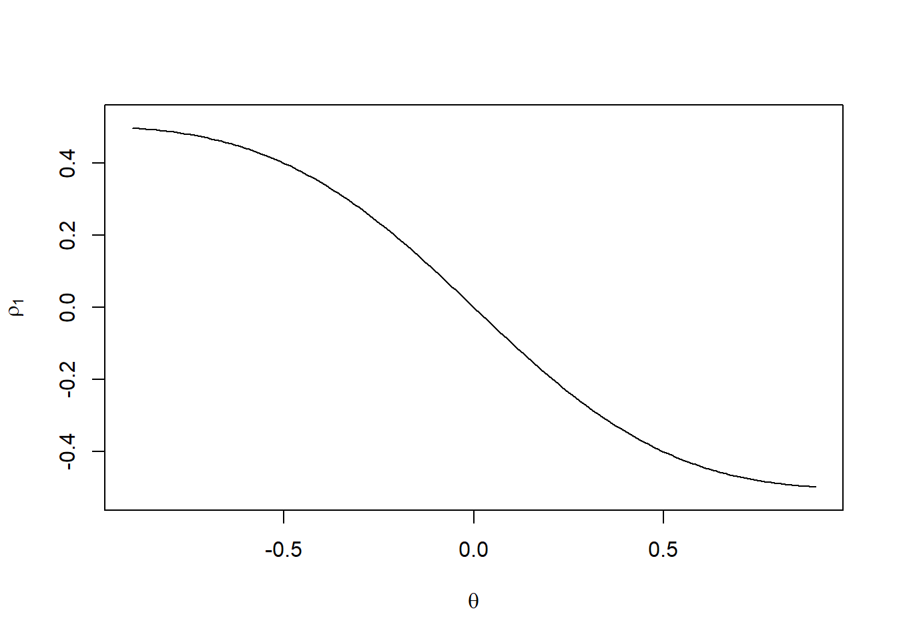
Энэхүү бүлэгт параметрик хугацааны цувааны загваруудын өргөн хүрээтэй анги болох авторегрессийн шилжих дунджийн (autoregressive moving average — ARMA) загваруудын үндсэн ойлголтуудыг авч үзнэ. Эдгээр загвар нь бодит ертөнцийн процессуудыг загварчлахад маш чухал байр суурь эзэлдэг.
Бид ажиглагдсан хугацааны цувааг үргэлж \(Y_t\) гэж тэмдэглэнэ. Үүнээс хойш бид мөн \(e_t\)-ээр ажиглагдахгүй цагаан шуугианы цувааг буюу ижил тархалттай, тэг дундажтай, хамааралгүй санамсаргүй хувьсагчдын дарааллыг төлөөлүүлэн авч үзэх болно. Бидний судалгааны ихэнх хэсэгт үл хамаарлын таамаглалыг \(e_t\) нь корреляцигүй санамсаргүй хувьсагчид байх гэсэн арай сул таамаглалаар орлуулж болох боловч бид энэхүү бага зэргийн ерөнхийллийг хөөцөлдөхгүй.
Ерөнхий шугаман процесс (general linear process) \(Y_t\) гэдэг нь одоогийн болон өнгөрсөн үеийн цагаан шуугианы гишүүдийн жинлэсэн шугаман эвлүүлгээр дараах байдлаар илэрхийлэгдэх боломжтой процессийг хэлнэ:
\[ Y_t = e_t + \psi_1 e_{t-1} + \psi_2 e_{t-2} + \cdots \tag{4.1.1} \]
Хэрэв энэхүү илэрхийллийн баруун гар тал нь үнэхээр төгсгөлгүй цуваа байвал баруун гар тал нь математикийн хувьд утгатай байхын тулд \(\psi\)-жингүүдэд тодорхой нөхцөл тавих ёстой. Бидний зорилгын хувьд дараах нөхцөл биелнэ гэж таамаглахад хангалттай:
\[ \sum_{i=1}^{\infty} \psi_i^2 < \infty \tag{4.1.2} \]
Мөн \(e_t\) нь ажиглагдахгүй тул \(e_t\)-ийн өмнөх коэффициентийг \(1\) буюу \(\psi_0 = 1\) гэж үзэхэд Тэгшитгэл (4.1.2)-ийн ерөнхий чанар алдагдахгүй гэдгийг тэмдэглэх нь зүйтэй.
Бидний байнга эргэн хандах нэгэн чухал жишээ бол \(\psi\)-жингүүд нь экспоненциал буурах дараалал үүсгэдэг тохиолдол юм:
\[ \psi_j = \phi^j \]
энд \(\phi\) нь \(-1\) ба \(+1\)-ийн хооронд орших тоо байна. Тэгвэл:
\[ Y_t = e_t + \phi e_{t-1} + \phi^2 e_{t-2} + \cdots \]
Энэ жишээний хувьд:
\[ E(Y_t) = E(e_t + \phi e_{t-1} + \phi^2 e_{t-2} + \cdots) = 0 \]
тул \(Y_t\) нь тэгтэй тэнцүү тогтмол дундажтай байна. Түүнчлэн:
\[ \begin{aligned} \operatorname{Var}(Y_t) &= \operatorname{Var}(e_t + \phi e_{t-1} + \phi^2 e_{t-2} + \cdots) \\ &= \operatorname{Var}(e_t) + \phi^2 \operatorname{Var}(e_{t-1}) + \phi^4 \operatorname{Var}(e_{t-2}) + \cdots \\ &= \sigma_e^2 (1 + \phi^2 + \phi^4 + \cdots) \\ &= \frac{\sigma_e^2}{1 - \phi^2} \quad \text{(геометр прогрессийн нийлбэр олсноор)} \end{aligned} \]
Цаашилбал:
\[ \begin{aligned} \operatorname{Cov}(Y_t, Y_{t-1}) &= \operatorname{Cov}(e_t + \phi e_{t-1} + \phi^2 e_{t-2} + \cdots,\; e_{t-1} + \phi e_{t-2} + \phi^2 e_{t-3} + \cdots) \\ &= \operatorname{Cov}(\phi e_{t-1}, e_{t-1}) + \operatorname{Cov}(\phi^2 e_{t-2}, \phi e_{t-2}) + \cdots \\ &= \phi \sigma_e^2 + \phi^3 \sigma_e^2 + \phi^5 \sigma_e^2 + \cdots \\ &= \phi \sigma_e^2 (1 + \phi^2 + \phi^4 + \cdots) \\ &= \frac{\phi \sigma_e^2}{1 - \phi^2} \quad \text{(дахин геометр прогрессийн нийлбэр олсноор)} \end{aligned} \]
Иймд:
\[ \operatorname{Corr}(Y_t, Y_{t-1}) = \frac{\phi \sigma_e^2 / (1 - \phi^2)}{\sigma_e^2 / (1 - \phi^2)} = \phi \]
Үүнтэй төстэй замаар бид \(\operatorname{Cov}(Y_t, Y_{t-k}) = \frac{\phi^k \sigma_e^2}{1 - \phi^2}\) болохыг олж болох ба улмаар:
\[ \operatorname{Corr}(Y_t, Y_{t-k}) = \phi^k \tag{4.1.3} \]
Энэ замаар тодорхойлогдсон процесс нь стационар буюу автоковариацын бүтэц нь абсолют хугацаанаас бус зөвхөн хугацааны лаг (ухралт)-аас хамаарч байгааг анхаарах нь чухал юм. Ерөнхий шугаман процесс \(Y_t = e_t + \psi_1 e_{t-1} + \psi_2 e_{t-2} + \cdots\)-ийн хувьд дээр хийсэнтэй төстэй тооцооллоор дараах үр дүнгүүдийг гаргаж авна:
\[ E(Y_t) = 0, \qquad \gamma_k = \operatorname{Cov}(Y_t, Y_{t-k}) = \sigma_e^2 \sum_{i=0}^{\infty} \psi_i \psi_{i+k}, \qquad k \ge 0 \tag{4.1.4} \]
энд \(\psi_0 = 1\) байна. Тэгээс ялгаатай \(\mu\) дундажтай процессийг Тэгшитгэл (4.1.1)-ийн баруун гар талд \(\mu\)-г нэмэх замаар гаргаж авч болно. Дундаж нь процессийн ковариацын шинж чанарт нөлөөлдөггүй тул бид өгөгдөлд загвар тохируулж эхлэх хүртлээ дунджийг тэг гэж таамаглах болно.
Зөвхөн төгсгөлөг тооны \(\psi\)-жингүүд тэгээс ялгаатай байх тохиолдолд бид шилжих дунджийн процесс (moving average process) гэж нэрлэгдэх процесстой болно. Энэ тохиолдолд бид тэмдэглэгээг бага зэрэг өөрчилж дараах байдлаар бичнэ:
\[ Y_t = e_t - \theta_1 e_{t-1} - \theta_2 e_{t-2} - \cdots - \theta_q e_{t-q} \tag{4.2.1} \]
Бид ийм цувааг \(q\) эрэмбийн шилжих дундаж (moving average of order \(q\)) гэж нэрлээд товчоор \(\text{MA}(q)\) гэж тэмдэглэдэг. «Шилжих дундаж» гэдэг нэр томьёо нь \(Y_t\)-ийг гаргаж авахдаа \(e_t, e_{t-1}, e_{t-2}, \ldots, e_{t-q}\) хувьсагчдад \(1, -\theta_1, -\theta_2, \ldots, -\theta_q\) жингүүдийг оноож, улмаар уг жингүүдээ шилжүүлэн \(e_{t+1}, e_t, e_{t-1}, \ldots, e_{t-q+1}\) хувьсагчдад оноосноор \(Y_{t+1}\)-ийг гаргаж авдаг гэх мэт зүй тогтлоос үүдэлтэй юм. Шилжих дунджийн загваруудыг анх Slutsky (1927) болон Wold (1938) нар судалсан байдаг.
Энгийн боловч маш чухал ач холбогдолтой 1-р эрэмбийн шилжих дунджийн процесс буюу \(\text{MA}(1)\) цувааг дэлгэрэнгүй авч үзье. Тэгшитгэл (4.1.4) дэх томьёонуудыг ашиглаж, тухайлан буулгахын оронд үр дүнгүүдийг дахин гаргаж авах нь сургамжтай байдаг. Загвар нь \(Y_t = e_t - \theta e_{t-1}\) хэлбэртэй байна. Энд зөвхөн ганц \(\theta\) оролцож байгаа тул илүүц \(1\) гэсэн доод индексийг орхив. Мэдээж \(E(Y_t) = 0\) болон \(\operatorname{Var}(Y_t) = \sigma_e^2 (1 + \theta^2)\) байна. Одоо:
\[ \operatorname{Cov}(Y_t, Y_{t-1}) = \operatorname{Cov}(e_t - \theta e_{t-1},\; e_{t-1} - \theta e_{t-2}) = \operatorname{Cov}(-\theta e_{t-1}, e_{t-1}) = -\theta \sigma_e^2 \]
ба
\[ \operatorname{Cov}(Y_t, Y_{t-2}) = \operatorname{Cov}(e_t - \theta e_{t-1},\; e_{t-2} - \theta e_{t-3}) = 0 \]
учир нь \(Y_t\) болон \(Y_{t-2}\)-ийн хооронд ижил индекстэй \(e\) гишүүд байхгүй юм. Үүнтэй адилаар \(k \ge 2\) байх бүрд \(\operatorname{Cov}(Y_t, Y_{t-k}) = 0\) байна; өөрөөр хэлбэл, энэ процесс нь лаг 1-ээс цааш ямар ч корреляцигүй байна. Энэхүү баримт нь хожим бодит өгөгдөлд тохиромжтой загвар сонгоход чухал үүрэг гүйцэтгэнэ.
Дүгнэвэл, \(\text{MA}(1)\) загвар \(Y_t = e_t - \theta e_{t-1}\)-ийн хувьд:
\[ \begin{aligned} E(Y_t) &= 0 \\ \gamma_0 &= \operatorname{Var}(Y_t) = \sigma_e^2 (1 + \theta^2) \\ \gamma_1 &= -\theta \sigma_e^2 \\ \rho_1 &= \frac{-\theta}{1 + \theta^2} \\ \gamma_k &= \rho_k = 0 \qquad (k \ge 2 \text{ хувьд}) \end{aligned} \tag{4.2.2} \]
Тэгшитгэл (4.2.2) дахь \(\theta\)-аас хамаарсан \(\rho_1\)-ийн зарим тоон утгууд нь боломжит хувилбаруудыг ойлгоход тусална. Сөрөг \(\theta\)-ийн хувьд харгалзах эерэг \(\theta\)-утгад өгөгдсөн \(\rho_1\)-ийн утгын тэмдгийг эсрэгээр өөрчлөх замаар шууд гаргаж авч болно гэдгийг анхаарна уу.
| \(\theta\) | \(\rho_1 = -\theta / (1 + \theta^2)\) | \(\theta\) | \(\rho_1 = -\theta / (1 + \theta^2)\) |
|---|---|---|---|
| \(0.1\) | \(-0.099\) | \(0.6\) | \(-0.441\) |
| \(0.2\) | \(-0.192\) | \(0.7\) | \(-0.470\) |
| \(0.3\) | \(-0.275\) | \(0.8\) | \(-0.488\) |
| \(0.4\) | \(-0.345\) | \(0.9\) | \(-0.497\) |
| \(0.5\) | \(-0.400\) | \(1.0\) | \(-0.500\) |
Математик анализын (уламжлал авч) аргаар \(\rho_1\)-ийн авч чадах хамгийн их утга нь \(\theta = -1\) үед \(\rho_1 = \frac{1}{2}\), харин хамгийн бага утга нь \(\theta = +1\) үед \(\rho_1 = -\frac{1}{2}\) болохыг харуулж болно (Дасгал 4.3-ыг үзнэ үү). Зураг 4.1-д \(\theta\) нь \(-1\)-ээс \(+1\) хүртэл өөрчлөгдөх үеийн лаг 1 дэх автокорреляцийн утгуудын графикийг харуулав.
theta <- seq(-0.9, 0.9, length.out = 200)
rho1 <- -theta / (1 + theta^2)
plot(theta, rho1, type = "l",
xlab = expression(theta),
ylab = expression(rho[1]),
ylim = c(-0.52, 0.52))
Тэгээс ялгаатай дурын \(\theta\) утгыг \(1/\theta\)-аар солиход \(\rho_1\)-ийн хувьд яг ижил утга гардгийг батлахыг Дасгал 4.4-т танаас хүссэн байгаа. Жишээлбэл, \(\theta = \frac{1}{2}\) болон \(\theta = 1/(\frac{1}{2}) = 2\) үед \(\rho_1\) нь ижил утгатай байна. Хэрэв бид \(\text{MA}(1)\) процессийг \(\rho_1 = 0.4\) гэдгийг мэдэж байсан ч \(\theta\)-ийн яг таг утгыг хэлж чадахгүй хэвээр байх болно. Бид энэхүү төвөгтэй асуудал руу 4.5 дугаар зүйлд урвуу чанар (invertibility)-ын тухай хэлэлцэх үедээ эргэн орох болно.
Зураг 4.2-т хэвийн тархалттай цагаан шуугиан болон \(\theta = -0.9\) бүхий симуляци хийсэн \(\text{MA}(1)\) цувааны хугацааны графикийг харуулав. Энэхүү загварын хувьд \(\rho_1 = 0.4972\) байдгийг Зураг 4.1-ээс эргэн санавал лаг 1 дээр дунд зэргийн хүчтэй эерэг корреляци байна. Дараалсан ажиглалтууд хоорондоо нягт холбоотой байх хандлагатай тул энэхүү корреляци нь цувааны графикаас тодорхой харагдаж байна. Хэрэв нэг ажиглалт цувааны дундаж түвшнээс дээгүүр байвал дараагийн ажиглалт мөн дунджаас дээгүүр байх хандлагатай байна. График нь хугацааны туршид харьцангуй гөлгөр бөгөөд зөвхөн хааяа нэг том хэлбэлзэл ажиглагдана.
library(TSA)
Attaching package: 'TSA'The following objects are masked from 'package:stats':
acf, arimaThe following object is masked from 'package:utils':
tardata(ma1.2.s)
plot(ma1.2.s, type = "o",
ylab = expression(Y[t]),
xlab = "Time",
main = "Simulated MA(1) Series")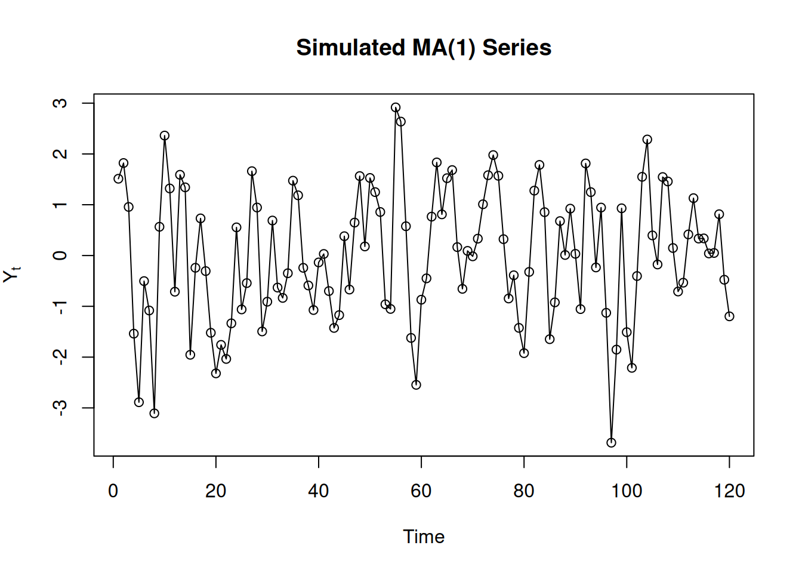
Лаг 1 дэх автокорреляци нь \(Y_t\)-ийг \(Y_{t-1}\)-ээс хамааруулан зурсан Зураг 4.3-т бүр ч илүү тодорхой харагдаж байна. Энэхүү график дахь дунд зэргийн хүчтэй өсөх хандлагыг анхаарна уу.
plot(x = zlag(ma1.2.s), y = ma1.2.s,
xlab = expression(Y[t-1]),
ylab = expression(Y[t]),
pch = 16)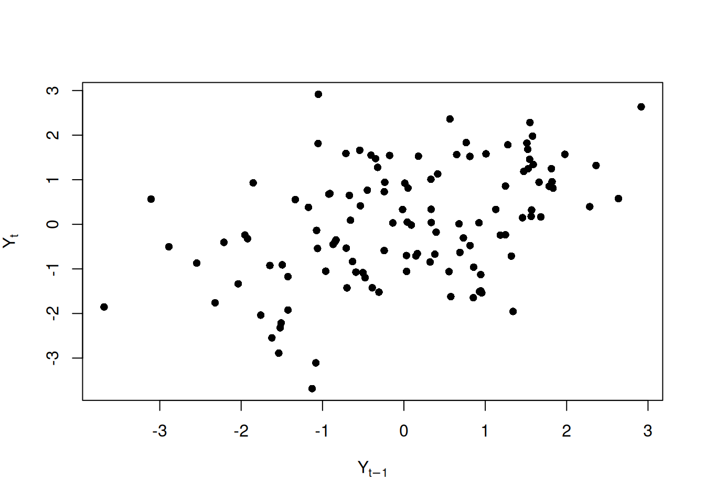
Зураг 4.4 дэх \(Y_t\) болон \(Y_{t-2}\)-ийн хамаарлын график нь энэхүү загварын хувьд лаг 2 дээр автокорреляци тэг байдгийг маш тод харуулж байна.
plot(x = zlag(ma1.2.s, 2), y = ma1.2.s,
xlab = expression(Y[t-2]),
ylab = expression(Y[t]),
pch = 16)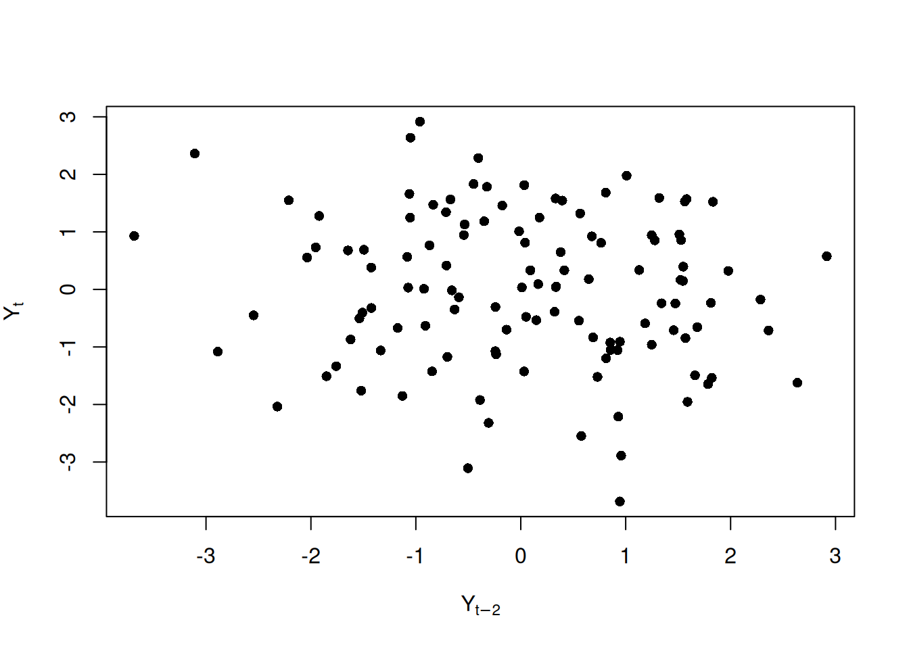
Зураг 4.5-д нэлээд өөр төрхтэй цувааг харуулав. Энэ бол \(\theta = +0.9\) бүхий симуляци хийсэн \(\text{MA}(1)\) цуваа юм. Энэ загварын хувьд \(\rho_1 = -0.497\) болохыг Зураг 4.1-ээс санавал лаг 1 дээр дунд зэргийн хүчтэй сөрөг корреляци оршин байна. Дараалсан ажиглалтууд нь тэг дунджийн эсрэг талуудад орших хандлагатай тул уг корреляцийг цувааны графикаас харж болно. Хэрэв нэг ажиглалт цувааны дундаж түвшнээс дээгүүр байвал дараагийн ажиглалт нь дунджаас доогуур байх хандлагатай байна. График нь хугацааны туршид нэлээд иржгэр (огцом хугарсан) хэлбэртэй бөгөөд ялангуяа Зураг 4.2 дахь графиктай харьцуулахад эрс ялгарна.
data(ma1.1.s)
plot(ma1.1.s, type = "o",
ylab = expression(Y[t]),
xlab = "Time",
main = "Simulated MA(1) Series")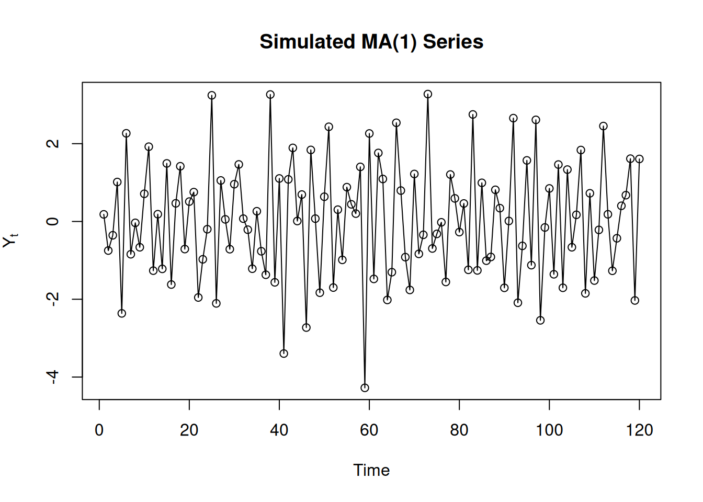
Лаг 1 дэх сөрөг автокорреляци нь Зураг 4.6 дахь лаг графикт бүр ч тодорхой харагдана.
plot(x = zlag(ma1.1.s), y = ma1.1.s,
xlab = expression(Y[t-1]),
ylab = expression(Y[t]),
pch = 16)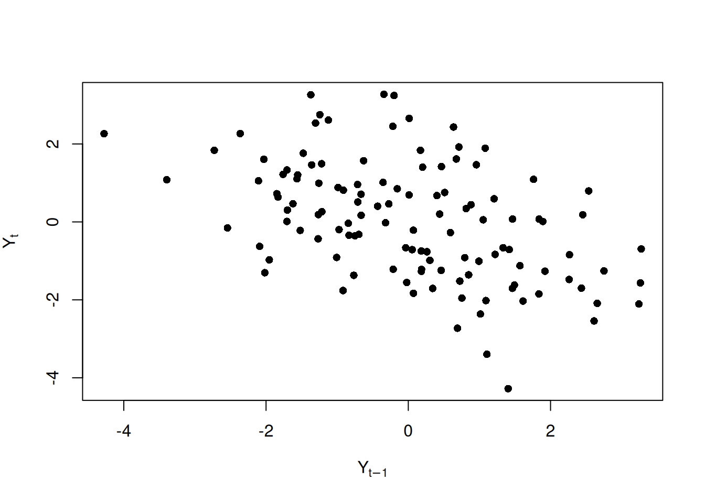
Зураг 4.7 дахь \(Y_t\) болон \(Y_{t-2}\)-ийн хамаарлын график нь энэхүү загварын лаг 2 дахь тэг автокорреляцийг харуулж байна.
plot(y = ma1.1.s, x = zlag(ma1.1.s, 2),
ylab = expression(Y[t]),
xlab = expression(Y[t-2]),
type = "p")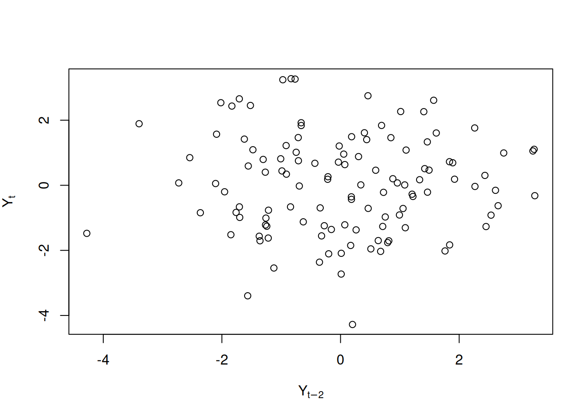
\(\text{MA}(1)\) процессууд нь лаг 1-ээс цааш автокорреляцигүй байдаг боловч процессийн эрэмбийг нэмэгдүүлэх замаар бид өндөр эрэмбийн корреляциудыг гаргаж авч чадна.
2-р эрэмбийн шилжих дунджийн процессийг авч үзье:
\[ Y_t = e_t - \theta_1 e_{t-1} - \theta_2 e_{t-2} \]
Энд:
\[ \begin{aligned} \gamma_0 &= \operatorname{Var}(Y_t) = \operatorname{Var}(e_t - \theta_1 e_{t-1} - \theta_2 e_{t-2}) = (1 + \theta_1^2 + \theta_2^2)\sigma_e^2 \\ \gamma_1 &= \operatorname{Cov}(Y_t, Y_{t-1}) = \operatorname{Cov}(e_t - \theta_1 e_{t-1} - \theta_2 e_{t-2},\; e_{t-1} - \theta_1 e_{t-2} - \theta_2 e_{t-3}) \\ &= \operatorname{Cov}(-\theta_1 e_{t-1}, e_{t-1}) + \operatorname{Cov}(-\theta_2 e_{t-2}, -\theta_1 e_{t-2}) \\ &= (-\theta_1 + (-\theta_1)(-\theta_2))\sigma_e^2 = (-\theta_1 + \theta_1 \theta_2)\sigma_e^2 \end{aligned} \]
ба
\[ \gamma_2 = \operatorname{Cov}(Y_t, Y_{t-2}) = \operatorname{Cov}(e_t - \theta_1 e_{t-1} - \theta_2 e_{t-2},\; e_{t-2} - \theta_1 e_{t-3} - \theta_2 e_{t-4}) = \operatorname{Cov}(-\theta_2 e_{t-2}, e_{t-2}) = -\theta_2 \sigma_e^2 \]
Иймд \(\text{MA}(2)\) процессийн хувьд:
\[ \begin{aligned} \rho_1 &= \frac{-\theta_1 + \theta_1 \theta_2}{1 + \theta_1^2 + \theta_2^2} \\ \rho_2 &= \frac{-\theta_2}{1 + \theta_1^2 + \theta_2^2} \\ \rho_k &= 0 \qquad (k = 3, 4, \ldots \text{ хувьд}) \end{aligned} \tag{4.2.3} \]
\(Y_t = e_t - e_{t-1} + 0.6 e_{t-2}\) гэсэн тухайн тохиолдолд бид дараах утгуудыг олно:
\[ \rho_1 = \frac{-1 + 1(-0.6)}{1 + 1^2 + (-0.6)^2} = \frac{-1.6}{2.36} = -0.678 \]
ба
\[ \rho_2 = \frac{0.6}{2.36} = 0.254 \]
Энэхүү \(\text{MA}(2)\) процессийн симуляцийн хугацааны графикийг Зураг 4.8-д харуулав. Цуваа нь хугацааны нэг нэгжид дунджийнхаа хоёр талд нааш цааш шилжих хандлагатай байна. Энэ нь лаг 1 дэх нэлээд хүчтэй сөрөг автокорреляцийг илтгэж байна.
data(ma2.s)
plot(ma2.s, type = "o",
ylab = expression(Y[t]),
xlab = "Time",
main = "Simulated MA(2) Series")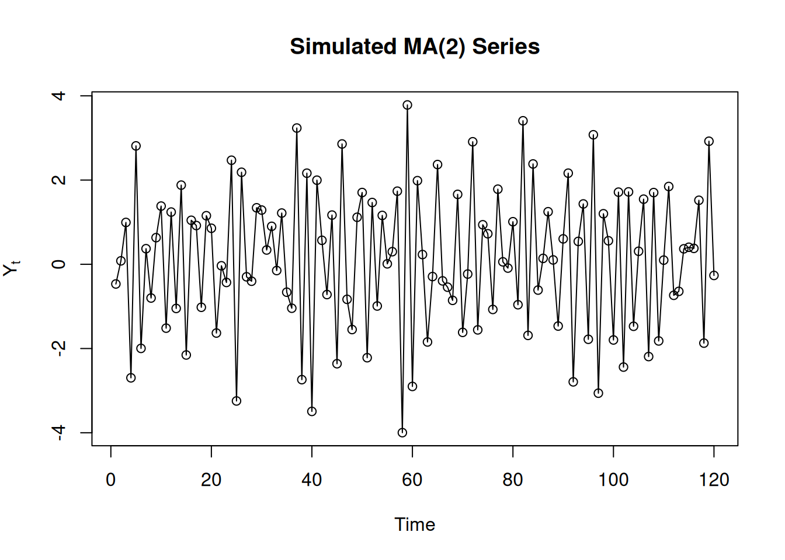
Зураг 4.9 дэх график нь уг сөрөг автокорреляцийг маш тод томруун харуулж байна.
plot(x = zlag(ma2.s), y = ma2.s,
xlab = expression(Y[t-1]),
ylab = expression(Y[t]),
pch = 16)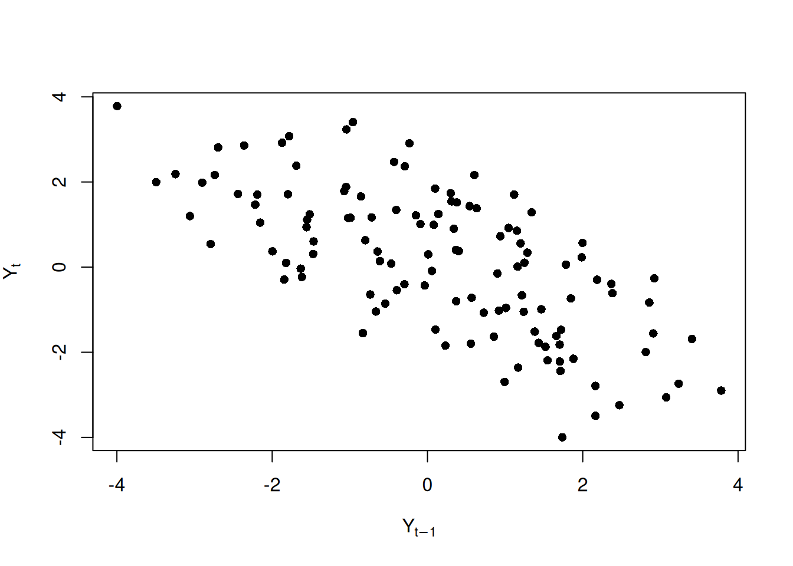
Лаг 2 дахь сул эерэг автокорреляцийг Зураг 4.10-т үзүүлэв.
plot(y = ma2.s, x = zlag(ma2.s, 2),
ylab = expression(Y[t]),
xlab = expression(Y[t-2]),
type = "p")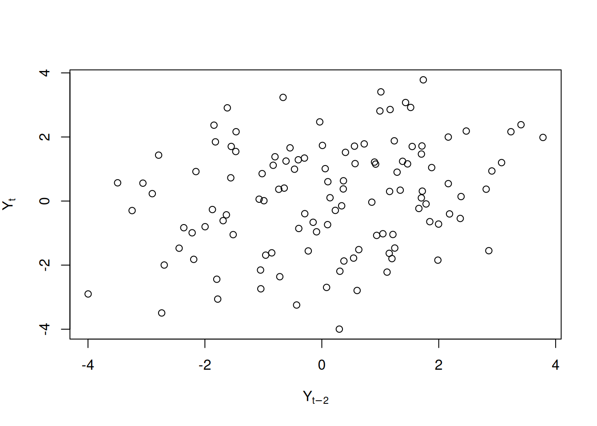
Эцэст нь, лаг 3 дээр автокорреляци байхгүй болох нь Зураг 4.11 дэх тархалтын графикаас тодорхой харагдана.
plot(y = ma2.s, x = zlag(ma2.s, 3),
ylab = expression(Y[t]),
xlab = expression(Y[t-3]),
type = "p")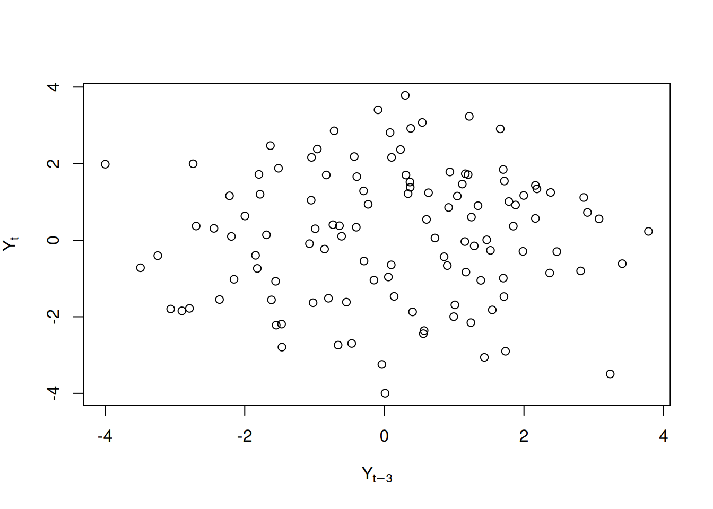
Ерөнхий \(\text{MA}(q)\) процесс \(Y_t = e_t - \theta_1 e_{t-1} - \theta_2 e_{t-2} - \cdots - \theta_q e_{t-q}\)-ийн хувьд дээрхитэй төстэй тооцооллоор дараах томьёонуудыг гаргаж авч болно:
\[ \gamma_0 = (1 + \theta_1^2 + \theta_2^2 + \cdots + \theta_q^2)\sigma_e^2 \tag{4.2.4} \]
ба
\[ \rho_k = \begin{cases} \dfrac{-\theta_k + \theta_1 \theta_{k+1} + \theta_2 \theta_{k+2} + \cdots + \theta_{q-k} \theta_q}{1 + \theta_1^2 + \theta_2^2 + \cdots + \theta_q^2}, & k = 1, 2, \ldots, q \text{ хувьд} \\[10pt] 0, & k > q \text{ хувьд} \end{cases} \tag{4.2.5} \]
энд \(\rho_q\)-ийн хүртвэр нь ердөө \(-\theta_q\) байна. Автокорреляцийн функц нь лаг \(q\)-ийн дараа «тасардаг» (cuts off) буюу тэг болдог. Харин түүнээс өмнөх лаг утгуудад түүний хэлбэр бараг ямар ч байж болно. Өөр нэг төрлийн процесс болох авторегрессийн процесс нь автокорреляцийн бусад зүй тогтлуудыг загварчлах боломжийг олгодог.
Авторегрессийн процессууд нь нэрнээсээ харахад л өөрсдийнхөө өмнөх утгууд дээр хийгдсэн регресс юм. Тодруулбал, \(p\)-р эрэмбийн авторегрессийн процесс (autoregressive process) \(Y_t\) нь дараах тэгшитгэлийг хангана:
\[ Y_t = \phi_1 Y_{t-1} + \phi_2 Y_{t-2} + \cdots + \phi_p Y_{t-p} + e_t \tag{4.3.1} \]
Цувааны одоогийн утга \(Y_t\) нь өөрийнхөө хамгийн сүүлийн өнгөрсөн \(p\) утгын шугаман эвлүүлэг дээр \(t\) хугацааны агшинд цуваанд орж ирж буй, өнгөрсөн утгуудаар тайлбарлагдахгүй бүх шинэ мэдээллийг агуулсан «инновацийн» (innovation) гишүүн \(e_t\)-ийг нэмсэнтэй тэнцүү байна. Иймд \(t\) бүрийн хувьд \(e_t\) нь \(Y_{t-1}, Y_{t-2}, Y_{t-3}, \ldots\) утгуудаас хамааралгүй гэж таамаглана. Авторегрессийн процессийн анхны суурь судалгааг Yule (1926) хийсэн байдаг.
Энд мөн товчоор \(\text{AR}(1)\) гэж тэмдэглэдэг 1-р эрэмбийн загварыг дэлгэрэнгүй авч үзэх нь сургамжтай. Цувааг стационар бөгөөд дараах тэгшитгэлийг хангадаг гэж таамаглая:
\[ Y_t = \phi Y_{t-1} + e_t \tag{4.3.2} \]
энд бид хялбарчлах үүднээс \(\phi\) коэффициентийн \(1\) гэсэн доод индексийг орхисон болно. Эхний бүлгүүдийн заншил ёсоор бид процессийн дунджийг хассан буюу цувааны дундаж тэгтэй тэнцүү гэж үзнэ. Стационар байх нөхцөлүүдийг хожим авч үзэх болно.
Эхлээд Тэгшитгэл (4.3.2)-ын хоёр талын дисперсийг авбал:
\[ \gamma_0 = \phi^2 \gamma_0 + \sigma_e^2 \]
\(\gamma_0\)-ийн хувьд бодвол:
\[ \gamma_0 = \frac{\sigma_e^2}{1 - \phi^2} \tag{4.3.3} \]
Эндээс шууд \(\phi^2 < 1\) буюу \(|\phi| < 1\) байх ёстой гэсэн мөрдлөгөө гарч байгааг анхаарна уу. Одоо Тэгшитгэл (4.3.2)-ын хоёр талыг \(Y_{t-k}\) (\(k = 1, 2, \ldots\))-аар үржүүлж, математик дундаж авбал:
\[ E(Y_{t-k} Y_t) = \phi E(Y_{t-k} Y_{t-1}) + E(e_t Y_{t-k}) \]
эсвэл:
\[ \gamma_k = \phi \gamma_{k-1} + E(e_t Y_{t-k}) \]
Цувааг тэг дундажтай стационар гэж таамагласан бөгөөд \(e_t\) нь \(Y_{t-k}\)-аас хамааралгүй тул:
\[ E(e_t Y_{t-k}) = E(e_t) E(Y_{t-k}) = 0 \]
болох ба улмаар:
\[ \gamma_k = \phi \gamma_{k-1}, \qquad k = 1, 2, 3, \ldots \text{ хувьд} \tag{4.3.4} \]
\(k = 1\) гэж тавихад \(\gamma_1 = \phi \gamma_0 = \frac{\phi \sigma_e^2}{1 - \phi^2}\) гарна. Харин \(k = 2\) үед \(\gamma_2 = \frac{\phi^2 \sigma_e^2}{1 - \phi^2}\) болно. Эндээс ерөнхий тохиолдолд дараах томьёо биелэхийг хялбархан харж болно:
\[ \gamma_k = \frac{\phi^k \sigma_e^2}{1 - \phi^2} \tag{4.3.5} \]
улмаар:
\[ \rho_k = \frac{\gamma_k}{\gamma_0} = \phi^k, \qquad k = 1, 2, 3, \ldots \text{ хувьд} \tag{4.3.6} \]
\(|\phi| < 1\) тул лаг \(k\)-ийн тоо өсөх тусам автокорреляцийн функцийн абсолют хэмжээ экспоненциал хурдаар буурдаг. Хэрэв \(0 < \phi < 1\) бол бүх корреляциуд эерэг байна; харин \(-1 < \phi < 0\) бол лаг 1 дэх автокорреляци сөрөг (\(\rho_1 = \phi\)) байх ба дараалсан автокорреляциудын тэмдэг нь эерэг болон сөрөг утгаар ээлжлэн солигдож, абсолют хэмжээ нь экспоненциалаар буурна. Хэд хэдэн автокорреляцийн функцийн графикийн хэсгийг Зураг 4.12-т харуулав.
par(mfrow = c(2, 2))
phis <- c(0.9, 0.4, -0.8, -0.5)
ylims <- list(c(0, 1), c(0, 1), c(-1, 1), c(-1, 1))
for (i in seq_along(phis)) {
acf_vals <- ARMAacf(ar = phis[i], lag.max = 12)[-1]
plot(1:12, acf_vals, type = "h", ylim = ylims[[i]],
xlab = "Lag", ylab = expression(rho[k]),
main = bquote(phi == .(phis[i])))
points(1:12, acf_vals, pch = 16)
abline(h = 0)
}
par(mfrow = c(1, 1))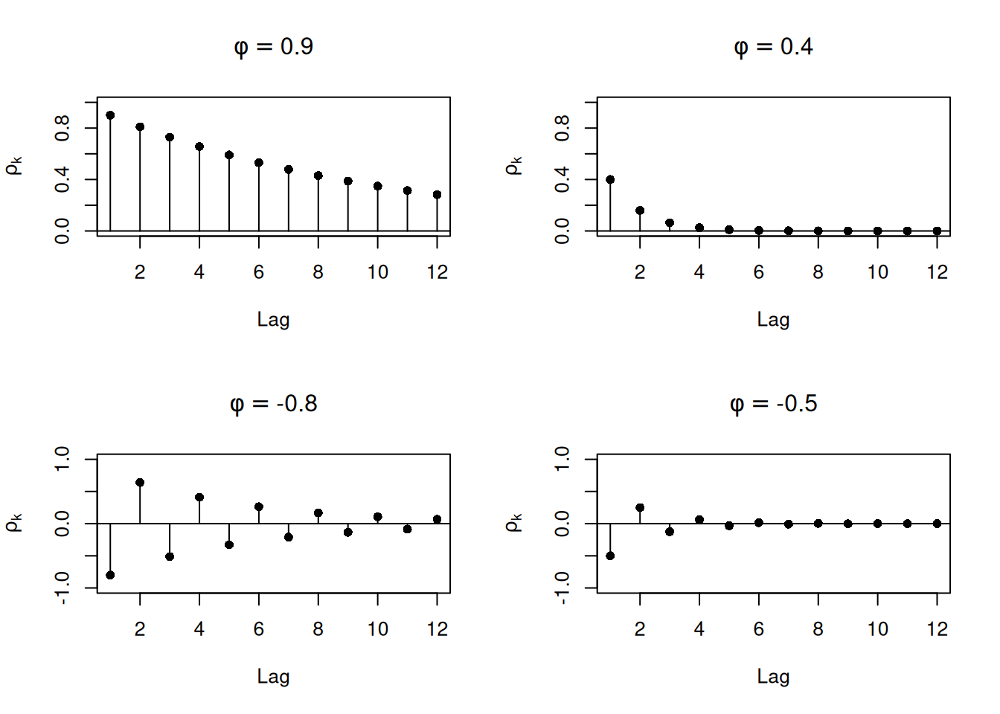
\(\phi\) нь \(\pm 1\)-д ойр байх үед экспоненциал бууралт нэлээд удаан явагддаг (жишээлбэл, \(0.9^6 = 0.53\)), харин бага \(|\phi|\) утгын үед бууралт маш хурдан байдаг (жишээлбэл, \(0.4^6 = 0.00410\)) болохыг анхаарна уу. \(\phi\) нь \(\pm 1\)-д ойр байх үед хүчтэй корреляци нь олон лаг дамжин үргэлжлэх бөгөөд хэрэв \(\phi\) эерэг бол харьцангуй гөлгөр цуваа, харин \(\phi\) сөрөг бол маш иржгэр (огцом хэлбэлзсэн) цуваа үүсгэнэ.
Зураг 4.13-т \(\phi = 0.9\) бүхий симуляци хийсэн \(\text{AR}(1)\) процессийн хугацааны графикийг харуулав. Цуваа өөрийн онолын тэг дунджийг хэр ховор огтолж байгааг анхаарна уу. Цуваанд инерци их байгаа бөгөөд урт хугацааны туршид дунджийн нэг талд бөөгнөрөн хадгалагдаж байна. Хөндлөнгийн ажиглагч уг цувааг хэд хэдэн хандлагатай (трендтэй) байна гэж маргаж магадгүй. Гэвч бодит байдал дээр бүх хугацааны цэгүүдэд онолын дундаж нь тэг гэдгийг бид мэднэ. Хандлага байгаа мэт хуурмаг сэтгэгдэл нь цувааны зэргэлдээх утгуудын хүчтэй автокорреляциас үүдэлтэй юм.
data(ar1.s)
plot(ar1.s, type = "o",
ylab = expression(Y[t]),
xlab = "Time",
main = "Simulated AR(1) Series")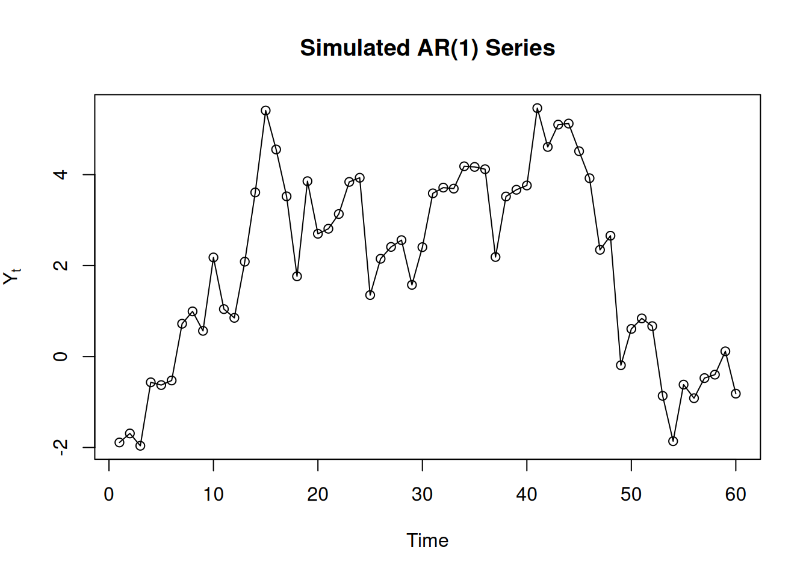
Цувааны гөлгөр шинж болон лаг 1 дэх хүчтэй автокорреляцийг Зураг 4.14 дэх лаг графикт дүрслэн харуулав.
plot(x = zlag(ar1.s), y = ar1.s,
xlab = expression(Y[t-1]),
ylab = expression(Y[t]),
pch = 16)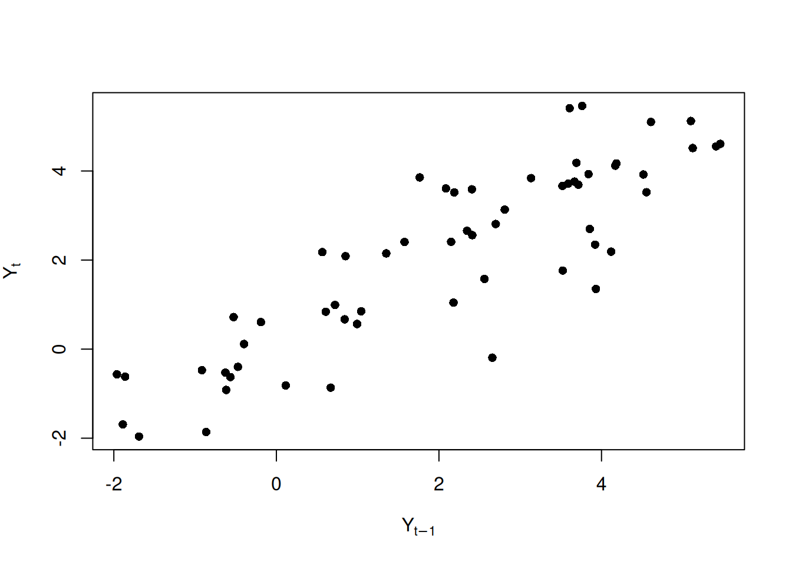
Энэхүү \(\text{AR}(1)\) загвар нь лаг 2 дээр ч мөн хүчтэй эерэг автокорреляцитай, тухайлбал \(\rho_2 = 0.9^2 = 0.81\) байна. Зураг 4.15 үүнийг маш сайн харуулж байна.
plot(x = zlag(ar1.s, 2), y = ar1.s,
xlab = expression(Y[t-2]),
ylab = expression(Y[t]),
pch = 16)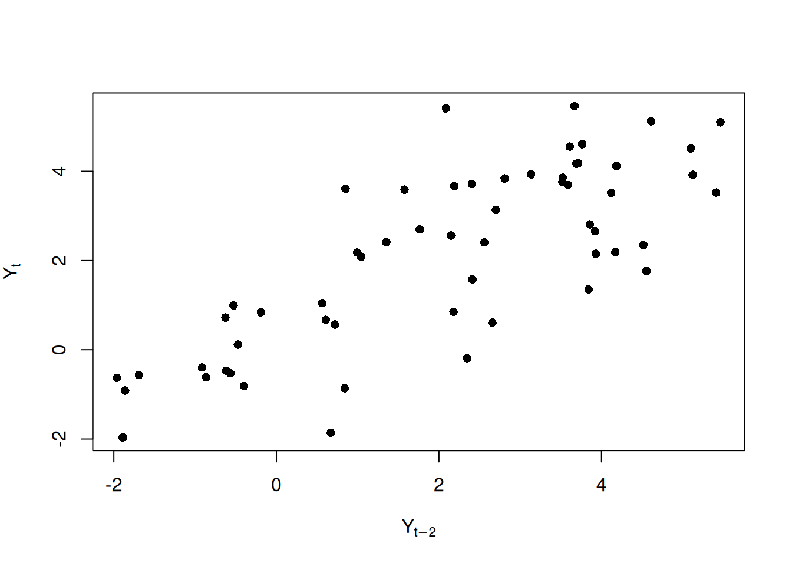
Эцэст нь, лаг 3 дээр ч автокорреляци нэлээд өндөр хэвээр буюу \(\rho_3 = 0.9^3 = 0.729\) байна. Зураг 4.16 нь тухайн цувааны хувьд үүнийг баталж байна.
plot(x = zlag(ar1.s, 3), y = ar1.s,
xlab = expression(Y[t-3]),
ylab = expression(Y[t]),
pch = 16)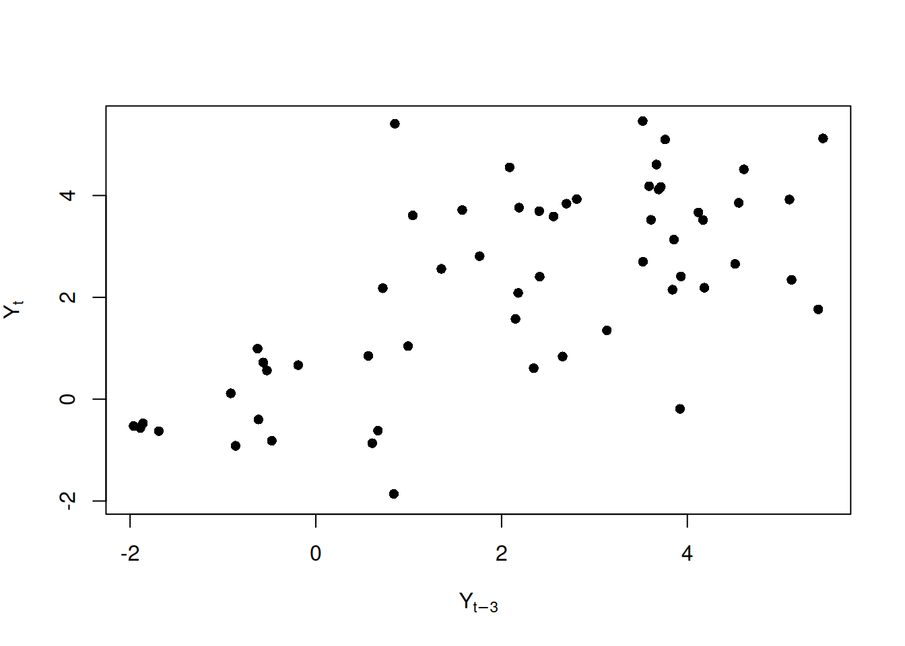
Тэгшитгэл (4.3.2)-оор өгөгдсөн \(\text{AR}(1)\) процессийн рекурсив тодорхойлолт нь загварыг утгачилан тайлбарлахад туйлын ашигтай байдаг. Харин бусад зорилгод \(\text{AR}(1)\) загварыг Тэгшитгэл (4.1.1) шиг ерөнхий шугаман процесс хэлбэрээр илэрхийлэх нь тохиромжтой. Рекурсив тодорхойлолт нь бүх \(t\)-ийн хувьд хүчинтэй. Хэрэв бид энэ тэгшитгэлд \(t\)-г \(t - 1\)-ээр орлуулбал \(Y_{t-1} = \phi Y_{t-2} + e_{t-1}\) болно. Үүнийг анхны илэрхийлэлд орлуулбал:
\[ Y_t = \phi(\phi Y_{t-2} + e_{t-1}) + e_t = e_t + \phi e_{t-1} + \phi^2 Y_{t-2} \]
Хэрэв бид энэхүү орлуулгыг өнгөрсөн хугацаа руу ухраан \(k - 1\) удаа давтан хийвэл дараах илэрхийллийг гаргаж авна:
\[ Y_t = e_t + \phi e_{t-1} + \phi^2 e_{t-2} + \cdots + \phi^{k-1} e_{t-k+1} + \phi^k Y_{t-k} \tag{4.3.7} \]
\(|\phi| < 1\) гэж таамаглаад \(k\)-г хязгааргүй өсгөвөл бид дараах төгсгөлгүй цувааны дүрслэлийг гаргаж авна гэдэг нь зүй ёсны мэт харагдана (энэ нь бараг л чанд баталгаа юм):
\[ Y_t = e_t + \phi e_{t-1} + \phi^2 e_{t-2} + \phi^3 e_{t-3} + \cdots \tag{4.3.8} \]
Энэ нь 4.1 дүгээр зүйлд бидний аль хэдийн судалсан \(\psi_j = \phi^j\) бүхий Тэгшитгэл (4.1.1)-ийн ерөнхий шугаман процессийн хэлбэр юм. Энэхүү дүрслэл нь \(|\phi| < 1\) гэсэн хязгаарлалт зайлшгүй шаардлагатай болохыг дахин тодотгож байгааг анхаарна уу.
\(e_t\) нь \(Y_{t-1}, Y_{t-2}, Y_{t-3}, \ldots\)-ээс хамааралгүй бөгөөд \(\sigma_e^2 > 0\) байх хязгаарлалт дор \(\text{AR}(1)\)-ийг тодорхойлогч \(Y_t = \phi Y_{t-1} + e_t\) рекурсив тэгшитгэлийн шийд нь зөвхөн ба гагцхүү \(|\phi| < 1\) үед л стационар байдгийг баталж болно. Хэдийгээр энд стационар чанараас ч илүү өргөн асуудал хамаардаг боловч \(|\phi| < 1\) шаардлагыг ихэвчлэн \(\text{AR}(1)\) процессийн стационар чанарын нөхцөл (stationarity condition) гэж нэрлэдэг (Box, Jenkins, and Reinsel, 1994, 54-р хуудас; Nelson, 1973, 39-р хуудас; болон Wei, 2005, 32-р хуудсыг үзнэ үү). Ялангуяа Дасгал 4.16, 4.18 болон 4.25-ыг үзээрэй.
Энэ хүрээд бид \(\text{AR}(1)\) процессийн автокорреляцийн функцийг хоёр өөр аргаар гаргаж авснаа тэмдэглэх нь зүйтэй. Эхний арга нь Тэгшитгэл (4.1.3)-т хүргэдэг ерөнхий шугаман процессийн дүрслэлийг ашигласан. Хоёр дахь арга нь тодорхойлогч рекурсив хамаарал \(Y_t = \phi Y_{t-1} + e_t\) болон Тэгшитгэл (4.3.4), (4.3.5), (4.3.6)-ийн гаргалгааг ашигласан. Гурав дахь гаргалгааг Тэгшитгэл (4.3.7)-ийн хоёр талыг \(Y_{t-k}\)-аар үржүүлж, хоёр талын математик дунджийг аваад, \(e_t, e_{t-1}, e_{t-2}, \ldots, e_{t-(k-1)}\) нь \(Y_{t-k}\)-аас хамааралгүй гэдгийг ашиглах замаар хийж болно. Хоёр дахь аргыг онцгойлон анхаарах хэрэгтэй, учир нь энэ нь өндөр эрэмбийн процессуудад маш эвтэйхэн өргөтгөгдөнө.
Одоо дараах тэгшитгэлийг хангах цувааг авч үзье:
\[ Y_t = \phi_1 Y_{t-1} + \phi_2 Y_{t-2} + e_t \tag{4.3.9} \]
энд заншил ёсоор \(e_t\) нь \(Y_{t-1}, Y_{t-2}, Y_{t-3}, \ldots\)-ээс хамааралгүй гэж таамаглана. Стационар чанарыг хэлэлцэхийн тулд бид AR характеристикийн олон гишүүнт:
\[ \phi(x) = 1 - \phi_1 x - \phi_2 x^2 \]
болон түүнд харгалзах AR характеристикийн тэгшитгэлийг оруулж ирье:
\[ 1 - \phi_1 x - \phi_2 x^2 = 0 \]
Квадрат тэгшитгэл нь үргэлж хоёр язгууртай (комплекс тоо байж болно) байдгийг бид мэднэ.
\(e_t\) нь \(Y_{t-1}, Y_{t-2}, Y_{t-3}, \ldots\)-ээс хамааралгүй байх нөхцөл дор Тэгшитгэл (4.3.9)-ийн стационар шийд оршин байх зайлшгүй бөгөөд хүрэлцээтэй нөхцөл нь AR характеристикийн тэгшитгэлийн язгуурууд абсолют утгаараа (модулиараа) 1-ээс их байх явдал гэдгийг баталж болно. Үүнийг бид заримдаа язгуурууд нь комплекс хавтгай дахь нэгж тойргийн гадна орших ёстой гэж хэлдэг. Энэхүү дүгнэлт нь \(p\)-р эрэмбийн тохиолдолд ямар ч өөрчлөлтгүйгээр ерөнхийлөгдөнө.
Хоёрдугаар эрэмбийн тохиолдолд квадрат характеристикийн тэгшитгэлийн язгууруудыг хялбархан олж болно:
\[ \frac{\phi_1 \pm \sqrt{\phi_1^2 + 4\phi_2}}{-2\phi_2} \tag{4.3.10} \]
Стационар байхын тулд эдгээр язгуурууд абсолют утгаараа 1-ээс их байхыг шаардана. Хавсралт B-д энэ нь зөвхөн ба гагцхүү дараах гурван нөхцөл зэрэг биелэх үед л үнэн болохыг баталсан байгаа:
\[ \phi_1 + \phi_2 < 1, \qquad \phi_2 - \phi_1 < 1, \qquad \text{болон} \qquad |\phi_2| < 1 \tag{4.3.11} \]
\(\text{AR}(1)\) загварын нэгэн адил бид эдгээрийг \(\text{AR}(2)\) загварын стационар чанарын нөхцөлүүд гэж нэрлэдэг. Энэхүү стационар мужийг Зураг 4.17-д дүрслэн харуулав.
phi1 <- seq(-2, 2, length.out = 300)
plot(c(-2, 2, 0, -2), c(-1, -1, 1, -1), type = "l", lwd = 2,
xlim = c(-2.1, 2.1), ylim = c(-1.1, 1.1),
xlab = expression(phi[1]), ylab = expression(phi[2]))
abline(h = 0, v = 0, lty = 3, col = "gray50")
lines(phi1, -phi1^2 / 4, lwd = 2)
text(0, 0.35, "бодит\nязгуурууд")
text(0, -0.6, "комплекс язгуурууд")
text(1.3, 0.65, expression(phi[1]^2 + 4*phi[2] == 0))
arrows(1.1, 0.5, 0.5, -0.5^2 / 4, length = 0.1)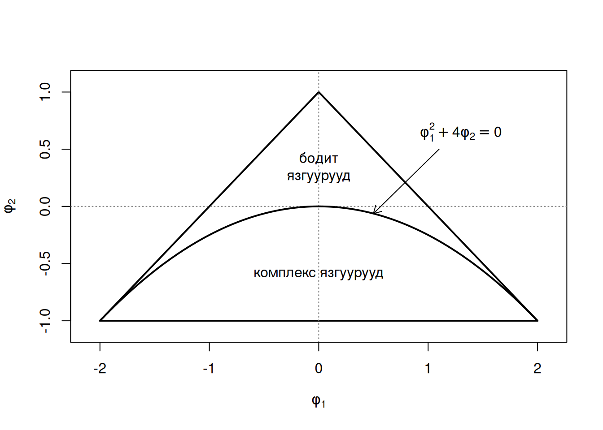
\(\text{AR}(2)\) тохиолдлын автокорреляцийн функцийг гаргаж авахын тулд бид Тэгшитгэл (4.3.9)-ийн тодорхойлогч рекурсив хамаарлын хоёр талыг \(Y_{t-k}\)-аар үржүүлж, математик дунджийг авна. Стационар чанартай, тэг дундажтай бөгөөд \(e_t\) нь \(Y_{t-k}\)-аас хамааралгүй гэж үзвэл:
\[ \gamma_k = \phi_1 \gamma_{k-1} + \phi_2 \gamma_{k-2}, \qquad k = 1, 2, 3, \ldots \text{ хувьд} \tag{4.3.12} \]
эсвэл хоёр талыг \(\gamma_0\)-д хуваавал:
\[ \rho_k = \phi_1 \rho_{k-1} + \phi_2 \rho_{k-2}, \qquad k = 1, 2, 3, \ldots \text{ хувьд} \tag{4.3.13} \]
Тэгшитгэл (4.3.12) ба/эсвэл (4.3.13)-ийг, ялангуяа \(k = 1\) болон \(2\) үед гарах хоёр тэгшитгэлийн системийг ихэвчлэн Юл-Уокерын тэгшитгэлүүд (Yule-Walker equations) гэж нэрлэдэг. \(k = 1\) гэж тавиад \(\rho_0 = 1\) болон \(\rho_{-1} = \rho_1\) гэдгийг ашиглавал \(\rho_1 = \phi_1 + \phi_2 \rho_1\) болох ба улмаар:
\[ \rho_1 = \frac{\phi_1}{1 - \phi_2} \tag{4.3.14} \]
\(\rho_1\) (болон \(\rho_0\))-ийн одоо мэдэгдэж буй утгуудыг ашиглан Тэгшитгэл (4.3.13)-д \(k = 2\) гэж орлуулбал:
\[ \rho_2 = \phi_1 \rho_1 + \phi_2 \rho_0 = \frac{\phi_2(1 - \phi_2) + \phi_1^2}{1 - \phi_2} \tag{4.3.15} \]
\(\rho_k\)-ийн дараагийн утгуудыг Тэгшитгэл (4.3.13)-ийн рекурсив хамаарлаас тоон байдлаар хялбархан тооцоолж болно.
Хэдийгээр Тэгшитгэл (4.3.13) нь \(\phi_1\) болон \(\phi_2\)-ийн өгөгдсөн утгуудаас автокорреляцийн утгуудыг тоон байдлаар тооцоолоход маш үр ашигтай боловч бусад зорилгод \(\rho_k\)-ийн ил тод томьёотой байх нь зүйтэй байдаг. Ил тод шийдийн хэлбэр нь \(1 - \phi_1 x - \phi_2 x^2 = 0\) характеристикийн тэгшитгэлийн язгууруудаас шийдвэрлэх байдлаар хамаарна. Эдгээр язгуурын урвуу хэмжигдэхүүнүүдийг \(G_1\) болон \(G_2\) гэж тэмдэглэвэл Хавсралт B-д дараах тэнцэтгэлийг харуулсан байдаг:
\[ G_1 = \frac{\phi_1 - \sqrt{\phi_1^2 + 4\phi_2}}{2} \qquad \text{болон} \qquad G_2 = \frac{\phi_1 + \sqrt{\phi_1^2 + 4\phi_2}}{2} \]
\(G_1 \ne G_2\) байх тохиолдолд дараах томьёо биелэхийг баталж болно:
\[ \rho_k = \frac{(1 - G_2^2) G_1^{k+1} - (1 - G_1^2) G_2^{k+1}}{(G_1 - G_2)(1 + G_1 G_2)}, \qquad k \ge 0 \text{ хувьд} \tag{4.3.16} \]
Хэрэв язгуурууд нь комплекс тоо байвал (өөрөөр хэлбэл, \(\phi_1^2 + 4\phi_2 < 0\) бол) \(\rho_k\)-г дараах байдлаар дахин бичиж болно:
\[ \rho_k = R^k \frac{\sin(\Theta k + \Phi)}{\sin(\Phi)}, \qquad k \ge 0 \text{ хувьд} \tag{4.3.17} \]
энд \(R = \sqrt{-\phi_2}\) бөгөөд \(\Theta\) ба \(\Phi\) нь \(\cos(\Theta) = \frac{\phi_1}{2\sqrt{-\phi_2}}\) болон \(\tan(\Phi) = \frac{1 - \phi_2}{1 + \phi_2}\) харьцаануудаар тодорхойлогдоно.
Бүрэн гүйцэд байлгах үүднээс хэрэв язгуурууд нь тэнцүү (\(\phi_1^2 + 4\phi_2 = 0\)) байвал дараах томьёо хүчинтэй болохыг тэмдэглэе:
\[ \rho_k = \left(1 + \frac{1 + \phi_2}{1 - \phi_2} k\right) \left(\frac{\phi_1}{2}\right)^k, \qquad k = 0, 1, 2, \ldots \text{ хувьд} \tag{4.3.18} \]
Эдгээр томьёоны гаргалгааны талаарх дэлгэрэнгүй тайлбарыг Fuller (1996, 2.5 дугаар зүйл)-ээс үзэж болно.
Эдгээр томьёоны нарийн ширийн нь бидэнд тийм ч чухал биш юм. Автокорреляцийн функц нь маш олон янзын хэлбэртэй байж болно гэдгийг анхаарахад л хангалттай. Бүх тохиолдолд лаг \(k\) өсөх тусам \(\rho_k\)-ийн абсолют хэмжээ экспоненциал хурдаар замхран буурдаг. Комплекс язгууртай тохиолдолд \(\rho_k\) нь унтралтын коэффициент (damping factor) \(R\) (\(0 \le R < 1\)), давтамж (frequency) \(\Theta\) болон фаз (phase) \(\Phi\) бүхий унтрах синус долгионы төлөв байдлыг харуулдаг. Боломжит хэлбэрүүдийн жишээг Зураг 4.18-д харуулав. (График байгуулахад R-ийн ARMAacf функц тустай байдаг.)
par(mfrow = c(2, 2))
params <- list(c(0.5, 0.25), c(1.0, -0.25), c(1.5, -0.75), c(1.0, -0.6))
ylims <- list(c(0, 1), c(0, 1), c(-0.6, 1), c(-0.6, 1))
for (i in seq_along(params)) {
p <- params[[i]]
acf_vals <- ARMAacf(ar = p, lag.max = 12)[-1]
plot(1:12, acf_vals, type = "h", ylim = ylims[[i]],
xlab = "Lag", ylab = expression(rho[k]),
main = bquote(phi[1] == .(p[1]) * "," ~ phi[2] == .(p[2])))
points(1:12, acf_vals, pch = 16)
abline(h = 0)
}
par(mfrow = c(1, 1))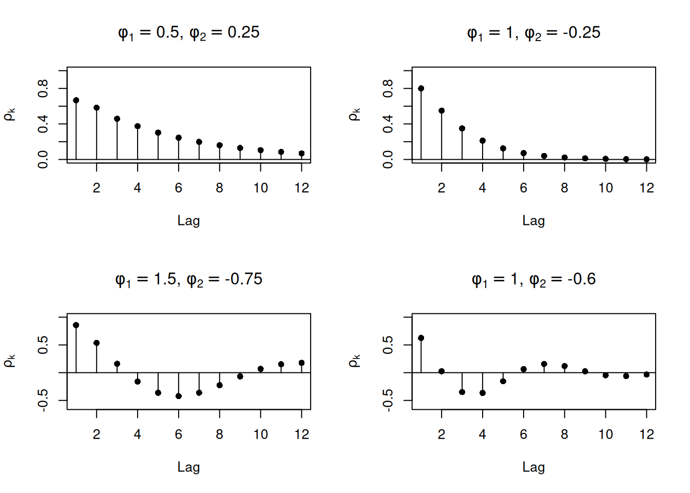
Зураг 4.19-д \(\phi_1 = 1.5\) болон \(\phi_2 = -0.75\) параметртэй симуляци хийгдсэн \(\text{AR}(2)\) цувааны хугацааны графикийг харуулав. Зураг 4.18-д үзүүлсэн \(\rho_k\)-ийн үелэх шинж чанар нь ижил \(360/30 = 12\) хугацааны нэгжийн үетэй цувааны бараг үелэх төлөвт тодорхой тусгагдсан байна. Хэрэв \(\Theta\)-ийг радианаар хэмжвэл \(2\pi/\Theta\) хэмжигдэхүүнийг заримдаа \(\text{AR}(2)\) процессын бараг үе (quasi-period) гэж нэрлэдэг.
data(ar2.s)
plot(ar2.s, type = "o",
ylab = expression(Y[t]),
xlab = "Time",
main = "Simulated AR(2) Series")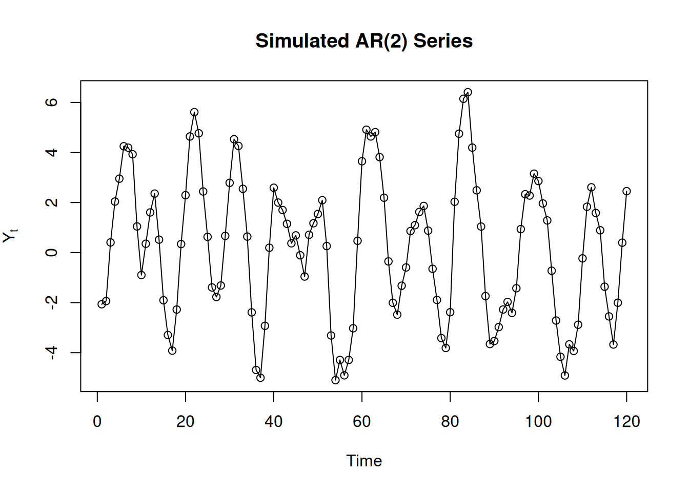
Процессын дисперс \(\gamma_0\)-ийг загварын параметрүүд болох \(\phi_1\), \(\phi_2\) болон \(\sigma_e^2\)-аар дараах байдлаар илэрхийлж болно: (4.3.9) тэгшитгэлийн хоёр талын дисперсийг авбал:
\[ \gamma_0 = (\phi_1^2 + \phi_2^2)\gamma_0 + 2\phi_1 \phi_2 \gamma_1 + \sigma_e^2 \tag{4.3.19} \]
(4.3.12) тэгшитгэлд \(k = 1\) гэж орлуулбал \(\gamma_0\) болон \(\gamma_1\)-ийн хувьд хоёр дахь шугаман тэгшитгэл болох \(\gamma_1 = \phi_1 \gamma_0 + \phi_2 \gamma_1\) гарах бөгөөд үүнийг (4.3.19) тэгшитгэлтэй хамтатган бодвол дараах илэрхийллийг гарган авна:
\[ \gamma_0 = \frac{(1 - \phi_2)\sigma_e^2}{(1 - \phi_2)(1 - \phi_1^2 - \phi_2^2) - 2\phi_2 \phi_1^2} = \left(\frac{1 - \phi_2}{1 + \phi_2}\right) \frac{\sigma_e^2}{(1 - \phi_2)^2 - \phi_1^2} \tag{4.3.20} \]
\(\text{AR}(2)\) цувааны ерөнхий шугаман процессын дүрслэл дэх \(\psi\)-коэффициентүүд нь \(\text{AR}(1)\) тохиолдлоос илүү төвөгтэй байдаг. Гэсэн хэдий ч бид (4.1.1) тэгшитгэлийг ашиглан \(Y_t\), \(Y_{t-1}\) болон \(Y_{t-2}\)-ийн ерөнхий шугаман процессын дүрслэлийг \(Y_t = \phi_1 Y_{t-1} + \phi_2 Y_{t-2} + e_t\) тэгшитгэлд орлуулж болно. Дараа нь \(e_j\)-ийн өмнөх коэффициентүүдийг тэнцүүлбэл дараах рекурсив хамаарлууд гарна:
\[ \begin{aligned} \psi_0 &= 1 \\ \psi_1 - \phi_1 \psi_0 &= 0 \\ \psi_j - \phi_1 \psi_{j-1} - \phi_2 \psi_{j-2} &= 0 \qquad (j = 2, 3, \ldots \text{ үед}) \end{aligned} \tag{4.3.21} \]
Эдгээрийг рекурсив аргаар бодож \(\psi_0 = 1\), \(\psi_1 = \phi_1\), \(\psi_2 = \phi_1^2 + \phi_2\) гэх мэтчилэн олж болно. Эдгээр хамаарал нь \(\phi_1\) болон \(\phi_2\)-ийн өгөгдсөн тоон утгуудын хувьд \(\psi\)-коэффициентүүдийн тоон шийдийг маш сайн гаргаж өгдөг.
Мөн \(G_1 \ne G_2\) үед ил шийд нь дараах хэлбэртэй болохыг харуулж болно:
\[ \psi_j = \frac{G_1^{j+1} - G_2^{j+1}}{G_1 - G_2} \tag{4.3.22} \]
энд өмнөхийн адил \(G_1\) ба \(G_2\) нь AR характеристикийн тэгшитгэлийн язгууруудын урвуу тоонууд юм. Хэрэв язгуурууд нь комплекс тоо байвал (4.3.22) тэгшитгэлийг дараах байдлаар дахин бичиж болно:
\[ \psi_j = R^j \frac{\sin[(j + 1)\Theta]}{\sin(\Theta)} \tag{4.3.23} \]
энэ нь автокорреляцийн функцийн (4.3.17) тэгшитгэлтэй ижил \(R\) унтралтын фактор болон \(\Theta\) давтамж бүхий унтардаг синус долгион юм.
Бүрэн гүйцэд байлгах үүднээс, хэрэв язгуурууд нь тэнцүү бол:
\[ \psi_j = (1 + j)\left(\frac{\phi_1}{2}\right)^j \tag{4.3.24} \]
Одоо \(p\)-р эрэмбийн авторегрессийн загварыг авч үзье:
\[ Y_t = \phi_1 Y_{t-1} + \phi_2 Y_{t-2} + \cdots + \phi_p Y_{t-p} + e_t \tag{4.3.25} \]
Үүний AR характеристикийн олон гишүүнт нь:
\[ \phi(x) = 1 - \phi_1 x - \phi_2 x^2 - \cdots - \phi_p x^p \tag{4.3.26} \]
бөгөөд харгалзах AR характеристикийн тэгшитгэл нь:
\[ 1 - \phi_1 x - \phi_2 x^2 - \cdots - \phi_p x^p = 0 \tag{4.3.27} \]
Өмнө дурдсанчлан, \(e_t\) нь \(Y_{t-1}, Y_{t-2}, Y_{t-3}, \ldots\)-аас хамааралгүй гэж үзвэл, (4.3.27) тэгшитгэлийн стационар шийд оршин байх зайлшгүй бөгөөд хүрэлцээтэй нөхцөл нь AR характеристикийн тэгшитгэлийн \(p\) ширхэг язгуур тус бүр абсолют утгаараа (модулиараа) 1-ээс их байх явдал юм. Олон гишүүнтийн язгуур ба коэффициентүүдийн хоорондох бусад хамаарлыг ашиглан дараах хоёр тэнцэтгэл биш нь стационар байх зайлшгүй нөхцөл болохыг харуулж болно. Өөрөөр хэлбэл, язгуурууд нь модулиараа 1-ээс их байхын тулд дараах хоёр нөхцөл зэрэг биелэх нь зайлшгүй боловч хүрэлцээтэй биш юм:
\[ \phi_1 + \phi_2 + \cdots + \phi_p < 1 \qquad \text{ба} \qquad |\phi_p| < 1 \tag{4.3.28} \]
Стационар бөгөөд математик дундаж нь тэгтэй тэнцүү гэж үзээд, (4.3.25) тэгшитгэлийг \(Y_{t-k}\)-аар үржүүлж, математик дундаж аваад, \(\gamma_0\)-д хуваавал дараах чухал рекурсив хамаарлыг гарган авна:
\[ \rho_k = \phi_1 \rho_{k-1} + \phi_2 \rho_{k-2} + \phi_3 \rho_{k-3} + \cdots + \phi_p \rho_{k-p} \qquad (k \ge 1 \text{ үед}) \tag{4.3.29} \]
(4.3.29) тэгшитгэлд \(k = 1, 2, \ldots, p\) утгуудыг орлуулж, \(\rho_0 = 1\) болон \(\rho_{-k} = \rho_k\) чанаруудыг ашиглавал ерөнхий Юл-Уокерын (Yule-Walker) тэгшитгэлүүд гарна:
\[ \begin{aligned} \rho_1 &= \phi_1 + \phi_2 \rho_1 + \phi_3 \rho_2 + \cdots + \phi_p \rho_{p-1} \\ \rho_2 &= \phi_1 \rho_1 + \phi_2 + \phi_3 \rho_1 + \cdots + \phi_p \rho_{p-2} \\ &\;\;\vdots \\ \rho_p &= \phi_1 \rho_{p-1} + \phi_2 \rho_{p-2} + \phi_3 \rho_{p-3} + \cdots + \phi_p \end{aligned} \tag{4.3.30} \]
\(\phi_1, \phi_2, \ldots, \phi_p\)-ийн тоон утгууд өгөгдсөн үед эдгээр шугаман тэгшитгэлийг бодож \(\rho_1, \rho_2, \ldots, \rho_p\)-ийн тоон утгуудыг олох боломжтой. Дараа нь (4.3.29) тэгшитгэлийг ашиглан дурын өндөр хоцролт (lag) дахь \(\rho_k\)-ийн тоон утгуудыг олж болно.
Дараах тэнцэтгэлийг анхаарвал:
\[ E(e_t Y_t) = E\big[e_t(\phi_1 Y_{t-1} + \phi_2 Y_{t-2} + \cdots + \phi_p Y_{t-p} + e_t)\big] = E(e_t^2) = \sigma_e^2 \]
бид (4.3.25) тэгшитгэлийг \(Y_t\)-ээр үржүүлж, математик дундаж авснаар дараах илэрхийллийг олно:
\[ \gamma_0 = \phi_1 \gamma_1 + \phi_2 \gamma_2 + \cdots + \phi_p \gamma_p + \sigma_e^2 \]
Үүнийг \(\rho_k = \gamma_k / \gamma_0\) харьцааг ашиглан дараах байдлаар бичиж болно:
\[ \gamma_0 = \frac{\sigma_e^2}{1 - \phi_1 \rho_1 - \phi_2 \rho_2 - \cdots - \phi_p \rho_p} \tag{4.3.31} \]
Ийнхүү процессын дисперс \(\gamma_0\)-ийг \(\sigma_e^2, \phi_1, \phi_2, \ldots, \phi_p\) параметрүүд болон одоо мэдэгдэж буй \(\rho_1, \rho_2, \ldots, \rho_p\) утгуудаар илэрхийлж болно. Мэдээжийн хэрэг, ийм ерөнхий тохиолдолд \(\rho_k\)-ийн хувьд ил шийд олох нь үндсэндээ боломжгүй боловч \(\rho_k\) нь экспоненциалаар буурах гишүүд (характеристикийн тэгшитгэлийн бодит язгууруудад харгалзах) болон унтардаг синус долгионы гишүүдийн (характеристикийн тэгшитгэлийн комплекс язгууруудад харгалзах) шугаман эвлүүлэг байна гэж хэлж чадна.
Процессыг стационар гэж үзвэл (4.1.1) тэгшитгэлийн ерөнхий шугаман процессын хэлбэрээр мөн илэрхийлж болох боловч \(\psi\)-коэффициентүүд нь \(\phi_1, \phi_2, \ldots, \phi_p\) параметрүүдийн нарийн төвөгтэй функцүүд байна. Эдгээр коэффициентийг тоон аргаар олж болно; Хавсралт C-г үзнэ үү.
Хэрэв бид цувааг зарим талаараа авторегрессийн, зарим талаараа дундаж гулсалтын шинжтэй гэж үзвэл нэлээд ерөнхий хугацааны цувааны загварыг гарган авна. Ерөнхий тохиолдолд, хэрэв:
\[ Y_t = \phi_1 Y_{t-1} + \phi_2 Y_{t-2} + \cdots + \phi_p Y_{t-p} + e_t - \theta_1 e_{t-1} - \theta_2 e_{t-2} - \cdots - \theta_q e_{t-q} \tag{4.4.1} \]
байвал \(Y_t\)-ийг харгалзан \(p\) болон \(q\) эрэмбийн холимог авторегрессийн дундаж гулсалтын (autoregressive moving average) процесс гэж нэрлэх бөгөөд нэрийг нь товчлоод \(\text{ARMA}(p, q)\) гэж бичнэ. Ердийнх шигээ бид эхлээд нэгэн чухал тусгай тохиолдлыг авч үзье.
Тодорхойлогч тэгшитгэлийг дараах байдлаар бичиж болно:
\[ Y_t = \phi Y_{t-1} + e_t - \theta e_{t-1} \tag{4.4.2} \]
Юл-Уокерын төрлийн тэгшитгэлүүдийг гарган авахын тулд эхлээд дараах хамаарлуудыг тэмдэглэе:
\[ \begin{aligned} E(e_t Y_t) &= E\big[e_t(\phi Y_{t-1} + e_t - \theta e_{t-1})\big] = \sigma_e^2 \\ E(e_{t-1} Y_t) &= E\big[e_{t-1}(\phi Y_{t-1} + e_t - \theta e_{t-1})\big] = \phi \sigma_e^2 - \theta \sigma_e^2 = (\phi - \theta)\sigma_e^2 \end{aligned} \]
Хэрэв бид (4.4.2) тэгшитгэлийг \(Y_{t-k}\)-аар үржүүлж математик дундаж авбал:
\[ \begin{aligned} \gamma_0 &= \phi \gamma_1 + \big[1 - \theta(\phi - \theta)\big]\sigma_e^2 \\ \gamma_1 &= \phi \gamma_0 - \theta \sigma_e^2 \\ \gamma_k &= \phi \gamma_{k-1} \qquad (k \ge 2 \text{ үед}) \end{aligned} \tag{4.4.3} \]
Эхний хоёр тэгшитгэлийг бодвол:
\[ \gamma_0 = \frac{1 - 2\phi\theta + \theta^2}{1 - \phi^2} \sigma_e^2 \tag{4.4.4} \]
харин энгийн рекурсив хамаарлыг бодвол:
\[ \rho_k = \frac{(1 - \theta\phi)(\phi - \theta)}{1 - 2\theta\phi + \theta^2} \phi^{k-1} \qquad (k \ge 1 \text{ үед}) \tag{4.4.5} \]
Энэхүү автокорреляцийн функц нь хоцролт \(k\) өсөх тусам экспоненциалаар буурдаг болохыг анхаарна уу. Унтралтын фактор нь \(\phi\) боловч бууралт нь \(\theta\)-аас мөн хамаарах \(\rho_1\) анхны утгаас эхэлнэ. Энэ нь мөн адил \(\phi\) унтралтын фактораар буурдаг боловч үргэлж \(\rho_0 = 1\) анхны утгаас эхэлдэг \(\text{AR}(1)\) загварын автокорреляциас ялгаатай юм. Жишээлбэл, хэрэв \(\phi = 0.8\) ба \(\theta = 0.4\) бол \(\rho_1 = 0.523\), \(\rho_2 = 0.418\), \(\rho_3 = 0.335\) гэх мэт байна. \(\rho_1\)-ийн тэмдэг болон \(\phi\)-ийн тэмдгээс хамааран \(\rho_k\) нь хэд хэдэн ялгаатай хэлбэртэй байж болно.
Загварын ерөнхий шугаман процессын хэлбэрийг (4.3.8) тэгшитгэлийг гаргасантай ижил аргаар олж болно. Бид дараах илэрхийллийг олно:
\[ Y_t = e_t + (\phi - \theta) \sum_{j=1}^{\infty} \phi^{j-1} e_{t-j} \tag{4.4.6} \]
өөрөөр хэлбэл,
\[ \psi_j = (\phi - \theta)\phi^{j-1} \qquad (j \ge 1 \text{ үед}) \]
Одоо бид илэрхий стационар байх нөхцөл болох \(|\phi| < 1\), эсвэл үүнтэй эквивалент болох AR характеристикийн \(1 - \phi x = 0\) тэгшитгэлийн язгуур нь абсолют утгаараа нэгээс их байх ёстой гэдгийг дурдах хэрэгтэй.
Ерөнхий \(\text{ARMA}(p, q)\) загварын хувьд бид дараах баримтуудыг баталгаагүйгээр дурдъя: \(e_t\) нь \(Y_{t-1}, Y_{t-2}, Y_{t-3}, \ldots\)-аас хамааралгүй байх нөхцөлд (4.4.1) тэгшитгэлийн стационар шийд оршин байх зайлшгүй бөгөөд хүрэлцээтэй нөхцөл нь AR характеристикийн \(\phi(x) = 0\) тэгшитгэлийн бүх язгуур модулиараа нэгээс их байх явдал юм.
Хэрэв стационар байх нөхцөлүүд хангагдвал загварыг дараах байдлаар тодорхойлогдох \(\psi\)-коэффициентүүд бүхий ерөнхий шугаман процесс хэлбэрээр мөн бичиж болно:
\[ \begin{aligned} \psi_0 &= 1 \\ \psi_1 &= -\theta_1 + \phi_1 \\ \psi_2 &= -\theta_2 + \phi_2 + \phi_1 \psi_1 \\ &\;\;\vdots \\ \psi_j &= -\theta_j + \phi_p \psi_{j-p} + \phi_{p-1} \psi_{j-p+1} + \cdots + \phi_1 \psi_{j-1} \end{aligned} \tag{4.4.7} \]
энд \(j < 0\) үед \(\psi_j = 0\), харин \(j > q\) үед \(\theta_j = 0\) гэж авна.
Дахин стационар гэж үзвэл, автокорреляцийн функц нь дараах тэгшитгэлийг хангахыг хялбархан харуулж болно:
\[ \rho_k = \phi_1 \rho_{k-1} + \phi_2 \rho_{k-2} + \cdots + \phi_p \rho_{k-p} \qquad (k > q \text{ үед}) \tag{4.4.8} \]
\(k = 1, 2, 3, \ldots, q\) үед \(\theta_1, \theta_2, \ldots, \theta_q\)-ийг агуулсан төстэй тэгшитгэлүүдийг гарган авч болно. Бүрэн автокорреляцийн функцийг тоон аргаар тооцоолоход тохиромжтой алгоритмыг Хавсралт C-д өгсөн болно. (Энэхүү алгоритм нь R програмын ARMAacf нэртэй функцэд хэрэгжсэн байдаг.)
\(\text{MA}(1)\) процессын хувьд \(\theta\)-ийг \(1/\theta\)-аар солиход яг ижил автокорреляцийн функц гардаг болохыг бид өмнө нь харсан. Дасгал ажлуудад \(\text{MA}(2)\) загварын хувьд мөн адил ийм цорын ганц биш байх (nonuniqueness) асуудалтай тулгарна. Ажиглагдсан хугацааны цуваанаас параметрүүдийн утгыг үнэлэхээс өмнө автокорреляцийн функц нь өгөгдсөн үед MA загварууд цорын ганц биш байдаг энэхүү асуудлыг шийдвэрлэх ёстой. Энэхүү цорын ганц биш байдал нь дараах өнгөц харахад хамааралгүй мэт санагдах асуулттай холбоотой болох нь тогтоогддог.
Авторегрессийн процессыг \(\psi\)-коэффициентүүдээр дамжуулан үргэлж ерөнхий шугаман процесс хэлбэрээр дахин илэрхийлж болдог тул AR процессыг хязгааргүй эрэмбийн дундаж гулсалтын процесс гэж үзэж бас болно. Гэсэн хэдий ч зарим зорилгод авторегрессийн дүрслэлүүд нь мөн тохиромжтой байдаг. Тэгвэл дундаж гулсалтын загварыг авторегресс хэлбэрээр дахин илэрхийлж болох уу?
Санаагаа тодорхой болгохын тулд \(\text{MA}(1)\) загварыг авч үзье:
\[ Y_t = e_t - \theta e_{t-1} \tag{4.5.1} \]
Эхлээд үүнийг \(e_t = Y_t + \theta e_{t-1}\) гэж дахин бичээд, дараа нь \(t\)-ийг \(t - 1\)-ээр сольж дээрх \(e_{t-1}\)-ийн оронд орлуулбал:
\[ e_t = Y_t + \theta(Y_{t-1} + \theta e_{t-2}) = Y_t + \theta Y_{t-1} + \theta^2 e_{t-2} \]
Хэрэв \(|\theta| < 1\) бол бид энэхүү орлуулгыг өнгөрсөн хугацаа руу «хязгааргүй» үргэлжлүүлж болох бөгөөд дараах илэрхийллийг гарган авна [(4.3.7) болон (4.3.8) тэгшитгэлүүдтэй харьцуулна уу]:
\[ e_t = Y_t + \theta Y_{t-1} + \theta^2 Y_{t-2} + \cdots \]
эсвэл
\[ Y_t = (-\theta Y_{t-1} - \theta^2 Y_{t-2} - \theta^3 Y_{t-3} - \cdots) + e_t \tag{4.5.2} \]
Хэрэв \(|\theta| < 1\) бол \(\text{MA}(1)\) загварыг урвуулж хязгааргүй эрэмбийн авторегрессийн загвар болгож болохыг бид харж байна. \(\text{MA}(1)\) загвар нь зөвхөн \(|\theta| < 1\) үед л урвуулагддаг (invertible) гэж бид хэлдэг.
Ерөнхий \(\text{MA}(q)\) эсвэл \(\text{ARMA}(p, q)\) загварын хувьд бид MA характеристикийн олон гишүүнтийг дараах байдлаар тодорхойлно:
\[ \theta(x) = 1 - \theta_1 x - \theta_2 x^2 - \theta_3 x^3 - \cdots - \theta_q x^q \tag{4.5.3} \]
болон харгалзах MA характеристикийн тэгшитгэл нь:
\[ 1 - \theta_1 x - \theta_2 x^2 - \theta_3 x^3 - \cdots - \theta_q x^q = 0 \tag{4.5.4} \]
\(\text{MA}(q)\) загвар нь урвуулагддаг (invertible) байх буюу:
\[ Y_t = \pi_1 Y_{t-1} + \pi_2 Y_{t-2} + \pi_3 Y_{t-3} + \cdots + e_t \tag{4.5.5} \]
байх \(\pi_j\) коэффициентүүд оршин байх зайлшгүй бөгөөд хүрэлцээтэй нөхцөл нь MA характеристикийн тэгшитгэлийн язгуурууд модулиараа 1-ээс их байх явдал гэдгийг харуулж болно. (Үүнийг AR загварын стационар чанартай харьцуулна уу.)
Мөн өгөгдсөн автокорреляцийн функцтэй урвуулагддаг MA процессыг үүсгэдэг параметрийн утгуудын цорын ганц олонлог оршин байдгийг харуулж болно. Жишээлбэл, \(Y_t = e_t + 2e_{t-1}\) болон \(Y_t = e_t + \frac{1}{2} e_{t-1}\) загварууд нь хоёулаа ижил автокорреляцийн функцтэй боловч зөвхөн \(-2\) гэсэн язгууртай хоёр дахь загвар нь л урвуулагддаг байна. Үүнээс хойш бид анхаарлаа зөвхөн бодит утга агуулгатай урвуулагддаг загваруудын ангид хандуулах болно.
Ерөнхий \(\text{ARMA}(p, q)\) загварын хувьд бид стационар чанар болон урвуулагдах чанарыг хоёуланг нь шаардана.
Энэ бүлэгт энгийн боловч маш ашигтай авторегрессийн, дундаж гулсалтын (ARMA) хугацааны цувааны загваруудыг танилцууллаа. Эдгээр загварын статистикийн үндсэн шинж чанаруудыг ялангуяа 1 ба 2-р эрэмбийн дундаж гулсалтын болон 1 ба 2-р эрэмбийн авторегрессийн процессуудын чухал тусгай тохиолдлуудад гарган авсан болно. Эдгээр тохиолдлын хувьд стационар болон урвуулагдах чанарын асуудлуудыг авч үзлээ. Мөн холимог ARMA загваруудын шинж чанарыг судалсан болно. Та эдгээр загварын автокорреляцийн шинж чанарууд болон загваруудын янз бүрийн дүрслэлүүдийг сайтар эзэмшсэн байх шаардлагатай.
4.1 Дараах тэгшитгэлээр тодорхойлогдсон стационар процессын автокорреляцийн функцийг үндсэн тодорхойлолт (анхдагч зарчим) ашиглан ол: \[ Y_t = 5 + e_t - \frac{1}{2} e_{t-1} + \frac{1}{4} e_{t-2} \]
4.2 Дараах өгөгдсөн параметрүүд бүхий \(\text{MA}(2)\) загваруудын автокорреляцийн функцийн графикийг тоймлон зур: - (a) \(\theta_1 = 0.5\) ба \(\theta_2 = 0.4\). - (b) \(\theta_1 = 1.2\) ба \(\theta_2 = -0.7\). - (c) \(\theta_1 = -1\) ба \(\theta_2 = -0.6\).
4.3 \(\text{MA}(1)\) процессын хувьд дараах тэнцэтгэлүүд биелэхийг батал: \[ \max_{-\infty < \theta < \infty} \rho_1 = 0.5 \qquad \text{ба} \qquad \min_{-\infty < \theta < \infty} \rho_1 = -0.5 \]
4.4 \(\theta\)-ийг \(1/\theta\)-аар солиход \(\text{MA}(1)\) процессын автокорреляцийн функц өөрчлөгдөхгүй гэдгийг харуул.
4.5 Дараах \(\text{AR}(1)\) загвар тус бүрийн автокорреляцийн функцийг тооцоолж, графикийг нь тоймлон зур. Автокорреляцийн функц бараг тэг рүү дөхөж унтрах хүртэл хангалттай олон хоцролт (lag) авч зур: - (a) \(\phi_1 = 0.6\). - (b) \(\phi_1 = -0.6\). - (c) \(\phi_1 = 0.95\). (20 хүртэлх хоцролтоор тооцоол.) - (d) \(\phi_1 = 0.3\).
4.6 \(Y_t\) нь \(-1 < \phi < +1\) бүхий \(\text{AR}(1)\) процесс байг. - (a) \(W_t = \nabla Y_t = Y_t - Y_{t-1}\) ялгаврын процессын автоковариацын функцийг \(\phi\) болон \(\sigma_e^2\)-аар илэрхийлж ол. - (b) Тухайлбал, \(\operatorname{Var}(W_t) = \frac{2\sigma_e^2}{1 + \phi}\) болохыг харуул.
4.7 Дараах загваруудын автокорреляцийн функцийн гол шинж чанаруудыг тайлбарла: (a) \(\text{MA}(1)\), (b) \(\text{MA}(2)\), (c) \(\text{AR}(1)\), (d) \(\text{AR}(2)\), болон (e) \(\text{ARMA}(1,1)\).
4.8 \(Y_t\) нь \(Y_t = \phi_2 Y_{t-2} + e_t\) гэсэн тусгай хэлбэрийн \(\text{AR}(2)\) процесс байг. Процесс стационар байх \(\phi_2\)-ийн утгын мужийг үндсэн тодорхойлолт ашиглан ол.
4.9 (4.3.13) тэгшитгэлийн рекурсив томьёог ашиглан дараах өгөгдсөн параметрүүдтэй \(\text{AR}(2)\) загваруудын автокорреляцийн функцийг тооцоолж, графикийг нь тоймлон зур. Тохиолдол тус бүрд характеристикийн тэгшитгэлийн язгуурууд бодит эсвэл комплекс эсэхийг тодорхойл. Хэрэв язгуурууд нь комплекс байвал харгалзах автокорреляцийн функцийг (4.3.17) тэгшитгэлээр илэрхийлэх үеийн унтралтын фактор \(R\) болон давтамж \(\Theta\)-ийг ол: - (a) \(\phi_1 = 0.6\) ба \(\phi_2 = 0.3\). - (b) \(\phi_1 = -0.4\) ба \(\phi_2 = 0.5\). - (c) \(\phi_1 = 1.2\) ба \(\phi_2 = -0.7\). - (d) \(\phi_1 = -1\) ба \(\phi_2 = -0.6\). - (e) \(\phi_1 = 0.5\) ба \(\phi_2 = -0.9\). - (f) \(\phi_1 = -0.5\) ба \(\phi_2 = -0.6\).
4.10 Дараах ARMA загвар тус бүрийн автокорреляцийн функцийн графикийг тоймлон зур: - (a) \(\phi = 0.7\) ба \(\theta = 0.4\) бүхий \(\text{ARMA}(1,1)\). - (b) \(\phi = 0.7\) ба \(\theta = -0.4\) бүхий \(\text{ARMA}(1,1)\).
4.11 \(Y_t = 0.8 Y_{t-1} + e_t + 0.7 e_{t-1} + 0.6 e_{t-2}\) гэсэн \(\text{ARMA}(1,2)\) загварын хувьд дараах хамаарлуудыг батал: - (a) \(k > 2\) үед \(\rho_k = 0.8 \rho_{k-1}\). - (b) \(\rho_2 = 0.8 \rho_1 + 0.6 \frac{\sigma_e^2}{\gamma_0}\).
4.12 Нэг нь \(\theta_1 = \theta_2 = 1/6\), нөгөө нь \(\theta_1 = -1\) ба \(\theta_2 = 6\) параметртэй хоёр \(\text{MA}(2)\) процессыг авч үзье. - (a) Эдгээр процесс нь ижил автокорреляцийн функцтэй болохыг харуул. - (b) Харгалзах характеристикийн олон гишүүнтүүдийн язгуурууд хоорондоо хэрхэн харьцуулагдах вэ?
4.13 \(Y_t\) нь \(k > 1\) үед \(\rho_k = 0\) байх стационар процесс байг. Тэгвэл \(|\rho_1| \le 1/2\) байх ёстойг батал. (Заавар: \(\operatorname{Var}(Y_{n+1} + Y_n + \cdots + Y_1)\) болон \(\operatorname{Var}(Y_{n+1} - Y_n + Y_{n-1} - \cdots \pm Y_1)\) дисперсүүдийг авч үз. Эдгээр нь бүх \(n\)-ийн хувьд сөрөг биш байх ёстой гэдгийг ашигла.)
4.14 \(Y_t\) нь тэг математик дундажтай, \(|\rho_1| < 0.5\) бөгөөд \(k > 1\) үед \(\rho_k = 0\) байх стационар процесс гэж үзье. Тэгвэл \(Y_t\)-ийг \(\text{MA}(1)\) процесс хэлбэрээр дүрсэлж болохыг харуул. Өөрөөр хэлбэл, \(Y_t = e_t - \theta e_{t-1}\) байх бөгөөд \(\rho_1\) нь зөв утгатай, мөн \(k > 0\) үед \(e_t\) нь \(Y_{t-k}\)-тэй корреляци хамааралгүй байх тийм цагаан шуугианы дараалал \(e_t\) оршин байдгийг батал. (Заавар: \(|\theta| < 1\) бөгөөд \(\rho_1 = \frac{-\theta}{1 + \theta^2}\) байхаар \(\theta\)-ийг сонго; дараа нь \(e_t = \sum_{j=0}^{\infty} \theta^j Y_{t-j}\) гэж ав. Хэрэв бид \(Y_t\)-ийг хэвийн тархалттай процесс гэж үзвэл \(e_t\) нь мөн хэвийн тархалттай байх ба тэг корреляци нь үл хамааралтай эквивалент байна.)
4.15 \(Y_t = \phi Y_{t-1} + e_t\) гэсэн \(\text{AR}(1)\) загварыг авч үзье. Хэрэв \(|\phi| = 1\) бол уг процесс стационар байж чадахгүй гэдгийг батал. (Заавар: Тэгшитгэлийн хоёр талын дисперсийг ав.)
4.16 \(Y_t = 3 Y_{t-1} + e_t\) гэсэн «стационар бус» \(\text{AR}(1)\) загварыг авч үзье. - (a) \(Y_t = -\sum_{j=1}^{\infty} \left(\frac{1}{3}\right)^j e_{t+j}\) нь уг \(\text{AR}(1)\) тэгшитгэлийг хангахыг харуул. - (b) (a) хэсэгт тодорхойлсон процесс стационар болохыг батал. - (c) Энэхүү шийд нь ямар учраас хангалтгүй (тохиромжгүй) вэ?
4.17 \(Y_t = \frac{1}{2} Y_{t-1} + e_t\) гэсэн \(\text{AR}(1)\) тэгшитгэлийг хангах процессыг авч үзье. - (a) \(Y_t = 10\left(\frac{1}{2}\right)^t + e_t + \frac{1}{2} e_{t-1} + \left(\frac{1}{2}\right)^2 e_{t-2} + \cdots\) нь уг \(\text{AR}(1)\) тэгшитгэлийн шийд болохыг харуул. - (b) (a) хэсэгт өгөгдсөн шийд стационар мөн үү?
4.18 \(-1 < \phi < +1\) үед тэг математик дундажтай, «стационар» \(\text{AR}(1)\) тэгшитгэл болох \(Y_t = \phi Y_{t-1} + e_t\)-ийг хангах процессыг авч үзье. \(c\) нь тэгээс ялгаатай дурын тогтмол тоо байг гээд \(W_t = Y_t + c\phi^t\) гэж тодорхойлъё. - (a) \(E(W_t) = c\phi^t\) болохыг харуул. - (b) \(W_t\) нь \(W_t = \phi W_{t-1} + e_t\) гэсэн «стационар» \(\text{AR}(1)\) тэгшитгэлийг хангахыг харуул. - (c) \(W_t\) нь стационар процесс мөн үү?
4.19 \(\theta_1 = 0.5, \theta_2 = -0.25, \theta_3 = 0.125, \theta_4 = -0.0625, \theta_5 = 0.03125\) болон \(\theta_6 = -0.015625\) параметртэй \(\text{MA}(6)\) загварыг авч үзье. Үүнтэй бараг ижил \(\psi\)-жингүүдтэй байх хамаагүй энгийн загварыг ол.
4.20 \(\theta_1 = 1, \theta_2 = -0.5, \theta_3 = 0.25, \theta_4 = -0.125, \theta_5 = 0.0625, \theta_6 = -0.03125\) болон \(\theta_7 = 0.015625\) параметртэй \(\text{MA}(7)\) загварыг авч үзье. Үүнтэй бараг ижил \(\psi\)-жингүүдтэй байх хамаагүй энгийн загварыг ол.
4.21 \(Y_t = e_{t-1} - e_{t-2} + 0.5 e_{t-3}\) загварыг авч үзье. - (a) Энэ процессын автоковариацын функцийг ол. - (b) Энэ нь далд хэлбэрийн тодорхой нэгэн \(\text{ARMA}(p, q)\) процесс болохыг харуул. Өөрөөр хэлбэл, \(\text{ARMA}(p, q)\) процесс нь \(Y_t\)-тэй ижил статистик шинж чанартай байхаар \(p, q\) болон \(\theta, \phi\)-уудын утгыг тодорхойл.
4.22 «\(1 - \phi_1 x - \phi_2 x^2 - \cdots - \phi_p x^p = 0\) тэгшитгэлийн язгуурууд абсолют утгаараа 1-ээс их байна» гэх өгүүлбэр нь «\(x^p - \phi_1 x^{p-1} - \phi_2 x^{p-2} - \cdots - \phi_p = 0\) тэгшитгэлийн язгуурууд абсолют утгаараа 1-ээс бага байна» гэх өгүүлбэртэй эквивалент болохыг батал. (Заавар: Хэрэв \(G\) нь нэг тэгшитгэлийн язгуур бол \(1/G\) нь нөгөө тэгшитгэлийн язгуур мөн үү?)
4.23 \(Y_t\) нь \(\rho_1 = \phi\) бүхий \(\text{AR}(1)\) процесс байг. \(b_t\) дарааллыг \(b_t = Y_t - \phi Y_{t+1}\) гэж тодорхойлъё. - (a) Бүх \(t\) болон \(k\)-ийн хувьд \(\operatorname{Cov}(b_t, b_{t-k}) = 0\) болохыг харуул. - (b) Бүх \(t\) болон \(k > 0\)-ийн хувьд \(\operatorname{Cov}(b_t, Y_{t+k}) = 0\) болохыг харуул.
4.24 \(e_t\) нь тэг математик дундажтай, нэгж дисперстэй цагаан шуугианы процесс байг. \(t = 0\) хугацаанаас эхлэн дараах байдлаар рекурсив хэлбэрээр тодорхойлогдох процессыг авч үзье: \(Y_0 = c_1 e_0\) ба \(Y_1 = c_2 Y_0 + e_1\) байг. Харин \(t > 1\) үед \(\text{AR}(2)\) процессын адилаар \(Y_t = \phi_1 Y_{t-1} + \phi_2 Y_{t-2} + e_t\) гэж өгөгдөв. - (a) Процессын математик дундаж тэгтэй тэнцүү болохыг харуул. - (b) \(\text{AR}(2)\) загварын стационар мужид орших \(\phi_1\) ба \(\phi_2\)-ийн тодорхой утгуудын хувьд \(\operatorname{Var}(Y_0) = \operatorname{Var}(Y_1)\) байх бөгөөд \(Y_1\) ба \(Y_0\)-ийн хоорондох 1 хоцролттой (lag 1) автокорреляци нь \(\phi_1, \phi_2\) параметртэй стационар \(\text{AR}(2)\) процессынхтой тэнцүү байхаар \(c_1\) болон \(c_2\)-ийг хэрхэн сонгохыг харуул. - (c) \(Y_t\) процессыг үүсгэсний дараа түүнийг хүссэн математик дундаж болон дисперстэй шинэ процесс руу хэрхэн хувиргахыг харуул. (Энэхүү дасгал нь стационар \(\text{AR}(2)\) процессуудыг симуляци хийх хялбар аргыг санал болгодог.)
4.25 \(Y_t = \phi Y_{t-1} + e_t\) тэгшитгэлийг хангах «\(\text{AR}(1)\)» процессыг авч үзье; энд \(\phi\) нь дурын тоо байж болох ба \(e_t\) нь өнгөрсөн утгууд болох \(Y_{t-1}, Y_{t-2}, \ldots\)-аас хамааралгүй цагаан шуугианы процесс юм. \(Y_0\) нь \(\mu_0\) математик дундажтай, \(\sigma_0^2\) дисперстэй санамсаргүй хувьсагч байг. - (a) \(t > 0\) үед дараах байдлаар бичиж болохыг харуул: \(Y_t = e_t + \phi e_{t-1} + \phi^2 e_{t-2} + \phi^3 e_{t-3} + \cdots + \phi^{t-1} e_1 + \phi^t Y_0\). - (b) \(t > 0\) үед \(E(Y_t) = \phi^t \mu_0\) болохыг харуул. - (c) \(t > 0\) үед дисперс нь дараах хэлбэртэй болохыг харуул: \[ \operatorname{Var}(Y_t) = \begin{cases} \dfrac{1 - \phi^{2t}}{1 - \phi^2}\sigma_e^2 + \phi^{2t}\sigma_0^2, & |\phi| \ne 1 \text{ үед} \\[8pt] t\sigma_e^2 + \sigma_0^2, & |\phi| = 1 \text{ үед} \end{cases} \] - (d) Одоо \(\mu_0 = 0\) гэж үзье. Хэрэв \(Y_t\) стационар бол \(|\phi| \ne 1\) байх ёстойг үндэслэлтэй тайлбарла. - (e) Үргэлжлүүлэн \(\mu_0 = 0\) гэж үзээд, хэрэв \(Y_t\) стационар бол \(\operatorname{Var}(Y_t) = \frac{\sigma_e^2}{1 - \phi^2}\) байх ба улмаар \(|\phi| < 1\) байх ёстойг батал.
Хоёрдугаар эрэмбийн тохиолдолд квадрат характеристикийн олон гишүүнтийн язгууруудыг дараах байдлаар хялбархан олж болно:
\[ \frac{\phi_1 \pm \sqrt{\phi_1^2 + 4\phi_2}}{-2\phi_2} \tag{4.B.1} \]
Стационар байхын тулд эдгээр язгуур нь абсолют утгаараа 1-ээс их байхыг бид шаарддаг. Энэ нь зөвхөн дараах гурван нөхцөл биелэх үед л үнэн болохыг одоо харуулъя:
\[ \phi_1 + \phi_2 < 1, \qquad \phi_2 - \phi_1 < 1, \qquad \text{ба} \qquad |\phi_2| < 1 \tag{4.B.2} \]
Баталгаа: Язгууруудын урвуу тоонуудыг \(G_1\) болон \(G_2\) гэж тэмдэглэе. Тэгвэл:
\[ \begin{aligned} G_1 &= \frac{-2\phi_2}{\phi_1 + \sqrt{\phi_1^2 + 4\phi_2}} = \frac{-2\phi_2}{\phi_1 + \sqrt{\phi_1^2 + 4\phi_2}} \cdot \frac{\phi_1 - \sqrt{\phi_1^2 + 4\phi_2}}{\phi_1 - \sqrt{\phi_1^2 + 4\phi_2}} \\ &= \frac{-2\phi_2\left(\phi_1 - \sqrt{\phi_1^2 + 4\phi_2}\right)}{\phi_1^2 - (\phi_1^2 + 4\phi_2)} = \frac{\phi_1 - \sqrt{\phi_1^2 + 4\phi_2}}{2} \end{aligned} \]
Үүнтэй төстэйгөөр,
\[ G_2 = \frac{\phi_1 + \sqrt{\phi_1^2 + 4\phi_2}}{2} \]
Одоо бид баталгааг бодит болон комплекс язгууруудад харгалзах хоёр тохиолдолд хувааж авч үзье. Язгуурууд бодит тоо байх зайлшгүй бөгөөд хүрэлцээтэй нөхцөл нь \(\phi_1^2 + 4\phi_2 \ge 0\) юм.
I. Бодит язгуурууд (Real Roots): \(i = 1\) болон \(2\)-ын хувьд \(|G_i| < 1\) байх зайлшгүй бөгөөд хүрэлцээтэй нөхцөл нь:
\[ -1 < \frac{\phi_1 - \sqrt{\phi_1^2 + 4\phi_2}}{2} \le \frac{\phi_1 + \sqrt{\phi_1^2 + 4\phi_2}}{2} < 1 \]
эсвэл
\[ -2 < \phi_1 - \sqrt{\phi_1^2 + 4\phi_2} \le \phi_1 + \sqrt{\phi_1^2 + 4\phi_2} < 2. \]
Зөвхөн эхний тэнцэтгэл бишийг авч үзье. Энд \(-2 < \phi_1 - \sqrt{\phi_1^2 + 4\phi_2}\) байх зайлшгүй бөгөөд хүрэлцээтэй нөхцөл нь \(\sqrt{\phi_1^2 + 4\phi_2} < \phi_1 + 2\) буюу \(\phi_1^2 + 4\phi_2 < \phi_1^2 + 4\phi_1 + 4\), улмаар \(\phi_2 < \phi_1 + 1\) буюу \(\phi_2 - \phi_1 < 1\) болно.
\(\phi_1 + \sqrt{\phi_1^2 + 4\phi_2} < 2\) тэнцэтгэл бишийг үүнтэй ижил аргаар хувиргавал \(\phi_2 + \phi_1 < 1\) гарна.
Эдгээр тэнцэтгэл биш нь \(\phi_1^2 + 4\phi_2 \ge 0\) нөхцөлтэй хамтдаа Зураг 4.17-д харуулсан бодит язгуурын тохиолдлын стационар мужийг тодорхойлно.
II. Комплекс язгуурууд (Complex Roots): Одоо \(\phi_1^2 + 4\phi_2 < 0\) байг. Энд \(G_1\) болон \(G_2\) нь харилцан хосмог комплекс тоонууд байх ба \(|G_1| = |G_2| < 1\) байх зайлшгүй бөгөөд хүрэлцээтэй нөхцөл нь \(|G_1|^2 < 1\) юм. Гэтэл \(|G_1|^2 = [\phi_1^2 + (-\phi_1^2 - 4\phi_2)]/4 = -\phi_2\) тул \(\phi_2 > -1\) болно. Энэ нь \(\phi_1^2 + 4\phi_2 < 0\) тэнцэтгэл биштэй хамтдаа Зураг 4.17-д үзүүлсэн комплекс язгуурын стационар мужийн хэсгийг тодорхойлж, (4.3.11) тэгшитгэлийг баталж байна. Ийнхүү баталгаа дууслаа.
\(Y_t\) нь стационар, урвуулагддаг \(\text{ARMA}(p, q)\) процесс байг. Ийм процессыг бид үргэлж ерөнхий шугаман процессын хэлбэрээр дараах байдлаар бичиж болдгийг саная:
\[ Y_t = \sum_{j=0}^{\infty} \psi_j e_{t-j} \tag{4.C.1} \]
энд \(\psi\)-жингүүдийг (4.4.7) тэгшитгэлүүдээс рекурсив аргаар олж болно. Тэгвэл бид дараах хамааралтай байна:
\[ E(Y_{t+k} e_t) = E\left(\sum_{j=0}^{\infty} \psi_j e_{t+k-j} e_t\right) = \psi_k \sigma_e^2 \qquad (k \ge 0 \text{ үед}) \tag{4.C.2} \]
Иймд автоковариац нь дараах тэгшитгэлийг хангах ёстой:
\[ \begin{aligned} \gamma_k = E(Y_{t+k} Y_t) &= E\left[\left(\sum_{j=1}^{p} \phi_j Y_{t+k-j} - \sum_{j=0}^{q} \theta_j e_{t+k-j}\right) Y_t\right] \\ &= \sum_{j=1}^{p} \phi_j \gamma_{k-j} - \sigma_e^2 \sum_{j=k}^{q} \theta_j \psi_{j-k} \end{aligned} \tag{4.C.3} \]
энд \(\theta_0 = -1\) бөгөөд хэрэв \(k > q\) бол сүүлийн нийлбэр байхгүй болно. \(k = 0, 1, \ldots, p\) гэж аваад \(\gamma_{-k} = \gamma_k\) чанарыг ашиглавал \(\gamma_0, \gamma_1, \ldots, \gamma_p\)-ийн хувьд \(p + 1\) ширхэг шугаман тэгшитгэл гарна:
\[ \begin{aligned} \gamma_0 &= \phi_1 \gamma_1 + \phi_2 \gamma_2 + \cdots + \phi_p \gamma_p - \sigma_e^2(\theta_0 + \theta_1 \psi_1 + \cdots + \theta_q \psi_q) \\ \gamma_1 &= \phi_1 \gamma_0 + \phi_2 \gamma_1 + \cdots + \phi_p \gamma_{p-1} - \sigma_e^2(\theta_1 + \theta_2 \psi_1 + \cdots + \theta_q \psi_{q-1}) \\ &\;\;\vdots \\ \gamma_p &= \phi_1 \gamma_{p-1} + \phi_2 \gamma_{p-2} + \cdots + \phi_p \gamma_0 - \sigma_e^2(\theta_p + \theta_{p+1} \psi_1 + \cdots + \theta_q \psi_{q-p}) \end{aligned} \tag{4.C.4} \]
энд хэрэв \(j > q\) бол \(\theta_j = 0\) байна.
Параметрүүдийн өгөгдсөн утгууд болох \(\sigma_e^2\), \(\phi\)-ууд болон \(\theta\)-уудын (улмаар \(\psi\)-уудын) хувьд эдгээр шугаман тэгшитгэлийг бодож \(\gamma_0, \gamma_1, \ldots, \gamma_p\)-ийг олж болно. Дараа нь \(k > p\) үеийн \(\gamma_k\)-ийн утгуудыг (4.4.8) рекурсив тэгшитгэлээс тооцоолно. Эцэст нь \(\rho_k\)-ийг \(\rho_k = \gamma_k / \gamma_0\) томьёогоор олно.
Процесс: \(Y_t = 5 + e_t - \frac{1}{2} e_{t-1} + \frac{1}{4} e_{t-2}\). Энэ нь \(\text{MA}(2)\) процесс байна.
Автокорреляцийн функц (ACF): \(\rho_k = \gamma_k / \gamma_0\): \[ \rho_0 = 1, \quad \rho_1 = \frac{-5/8}{21/16} = -\frac{10}{21} \approx -0.476, \quad \rho_2 = \frac{1/4}{21/16} = \frac{4}{21} \approx 0.190, \quad \rho_k = 0 \;\;(k \ge 3). \]
Стандарт \(\text{MA}(2)\) загвар: \(Y_t = e_t - \theta_1 e_{t-1} - \theta_2 e_{t-2}\). ACF-ийн томьёо: \[ \rho_1 = \frac{-\theta_1 + \theta_1 \theta_2}{1 + \theta_1^2 + \theta_2^2}, \qquad \rho_2 = \frac{-\theta_2}{1 + \theta_1^2 + \theta_2^2}, \qquad \rho_k = 0 \;\;(k \ge 3). \]
(a) \(\theta_1 = 0.5, \theta_2 = 0.4\): \[\rho_1 = \frac{-0.5 + (0.5)(0.4)}{1 + 0.25 + 0.16} = \frac{-0.3}{1.41} \approx -0.213, \qquad \rho_2 = \frac{-0.4}{1.41} \approx -0.284.\] Зураг: Lag 0-д \(1\), lag 1-д \(-0.213\), lag 2-д \(-0.284\) утгатай багана. Lag 2-оос хойш тэг (cut off).
(b) \(\theta_1 = 1.2, \theta_2 = -0.7\): \[\rho_1 = \frac{-1.2 + (1.2)(-0.7)}{1 + 1.44 + 0.49} = \frac{-2.04}{2.93} \approx -0.696, \qquad \rho_2 = \frac{-(-0.7)}{2.93} = \frac{0.7}{2.93} \approx 0.239.\] Зураг: Lag 1-д хүчтэй сөрөг (\(-0.696\)), lag 2-д бага зэрэг эерэг (\(0.239\)) утгатай багана.
(c) \(\theta_1 = -1, \theta_2 = -0.6\): \[\rho_1 = \frac{-(-1) + (-1)(-0.6)}{1 + 1 + 0.36} = \frac{1.6}{2.36} \approx 0.678, \qquad \rho_2 = \frac{-(-0.6)}{2.36} = \frac{0.6}{2.36} \approx 0.254.\] Зураг: Lag 1 ба lag 2-т хоёуланд нь эерэг утгатай багана.
\(\text{MA}(1)\): \(Y_t = e_t - \theta e_{t-1}\) үед \(\rho_1 = \frac{-\theta}{1 + \theta^2}\). Бид \(\rho_1\)-ийн \(\theta\)-өөр авсан уламжлалыг ашиглан экстремум утгыг олно:
\[ f(\theta) = \frac{-\theta}{1 + \theta^2}, \qquad f'(\theta) = \frac{-(1 + \theta^2) - (-\theta)(2\theta)}{(1 + \theta^2)^2} = \frac{\theta^2 - 1}{(1 + \theta^2)^2} \]
\[ f'(\theta) = 0 \implies \theta^2 = 1 \implies \theta = \pm 1. \]
Иймд \(\max_{-\infty < \theta < \infty} \rho_1 = 0.5\), \(\min_{-\infty < \theta < \infty} \rho_1 = -0.5\) болох нь батлагдав.
\(\theta\)-ийн оронд \(1/\theta\)-г тавивал:
\[ \rho_1' = \frac{-1/\theta}{1 + (1/\theta)^2} = \frac{-1/\theta}{(\theta^2 + 1)/\theta^2} = -\frac{1}{\theta} \cdot \frac{\theta^2}{\theta^2 + 1} = \frac{-\theta}{\theta^2 + 1} = \rho_1. \]
Энэ нь \(\text{MA}(1)\) процессын урвуу чанар (invertibility) болон ACF нь \(\theta\) болон \(1/\theta\)-ийн хувьд ижил байх identifiability асуудлыг харуулж байна.
\(\text{AR}(1)\): \(Y_t = \phi_1 Y_{t-1} + e_t\). ACF нь \(\rho_k = \phi_1^k\).
(a) \(W_t\)-ийн автоковариацын функцийг \(\phi, \sigma_e^2\)-ээр илэрхийл:
\(W_t = \phi Y_{t-1} + e_t - Y_{t-1} = (\phi - 1) Y_{t-1} + e_t\). \(W_t\) нь \(\text{ARMA}(1,1)\) процесс болно: \(W_t - \phi W_{t-1} = e_t - e_{t-1}\).
\(\text{MA}(\infty)\) хэлбэрээр: \(W_t = e_t + (\phi - 1)\sum_{j=1}^{\infty} \phi^{j-1} e_{t-j}\).
\[ \gamma_W(0) = \operatorname{Var}(W_t) = \sigma_e^2 + \frac{(\phi - 1)^2 \sigma_e^2}{1 - \phi^2} = \sigma_e^2 \left(1 + \frac{1 - \phi}{1 + \phi}\right) = \frac{2\sigma_e^2}{1 + \phi}. \]
\[ \begin{aligned} \gamma_W(1) &= \operatorname{Cov}\big((\phi - 1)Y_{t-1} + e_t,\; (\phi - 1)Y_{t-2} + e_{t-1}\big) \\ &= (\phi - 1)\operatorname{Cov}(Y_{t-1}, e_{t-1}) + (\phi - 1)^2 \operatorname{Cov}(Y_{t-1}, Y_{t-2}) \\ &= (\phi - 1)\sigma_e^2 + (\phi - 1)^2 \frac{\phi \sigma_e^2}{1 - \phi^2} = -\sigma_e^2 \frac{1 - \phi}{1 + \phi}. \end{aligned} \]
\(k \ge 2\)-ийн хувьд: \(\gamma_W(k) = \phi^{k-1} \gamma_W(1)\).
(b) \(\operatorname{Var}(W_t) = \frac{2\sigma_e^2}{1 + \phi}\) гэдгийг харуул: Дээрх (a) хэсгийн \(\gamma_W(0)\)-ийн томьёо нь яг \(\frac{2\sigma_e^2}{1 + \phi}\) байна.
Тэгшитгэлийг \(Y_{t-k}\)-ээр үржүүлж, математик дундаж авбал: \(\gamma_k = \phi_2 \gamma_{k-2}\). Энэ нь зөвхөн тэгш lag-үүдэд хамааралтай (сондгой lag-үүдэд \(\gamma_1 = 0\)).
Характеристикийн тэгшитгэл: \(1 - \phi_2 z^2 = 0 \implies z^2 = 1/\phi_2 \implies z = \pm 1/\sqrt{\phi_2}\).
Стационар байх нөхцөл нь бүх язгуур нэгж тойргоос гадна байх ёстой (\(|z| > 1\)): \[ \left|\frac{1}{\sqrt{\phi_2}}\right| > 1 \implies \frac{1}{|\phi_2|} > 1 \implies |\phi_2| < 1. \] Иймд стационар байх муж нь \(-1 < \phi_2 < 1\).
Загвар: \(Y_t = \phi_1 Y_{t-1} + \phi_2 Y_{t-2} + e_t\). Юл-Уокерын тэгшитгэл: \(\rho_k = \phi_1 \rho_{k-1} + \phi_2 \rho_{k-2}\) (\(k \ge 3\)), \(\rho_1 = \frac{\phi_1}{1 - \phi_2}\), \(\rho_2 = \phi_1 \rho_1 + \phi_2\). Характеристикийн тэгшитгэл (урвуу язгуурын хувьд): \(x^2 - \phi_1 x - \phi_2 = 0\), язгуур \(x_{1,2} = \frac{\phi_1 \pm \sqrt{\phi_1^2 + 4\phi_2}}{2}\). Комплекс язгуурын үед \(R = \sqrt{-\phi_2}\), \(\Theta = \arccos\!\left(\frac{\phi_1}{2\sqrt{-\phi_2}}\right)\).
Загвар: \(Y_t = \phi Y_{t-1} + e_t - \theta e_{t-1}\). ACF-ийн ерөнхий томьёо: \[ \rho_1 = \frac{(1 - \phi\theta)(\phi - \theta)}{1 + \theta^2 - 2\phi\theta}, \qquad \rho_k = \phi^{k-1} \rho_1 \;\;(k \ge 2). \]
(a) \(\phi = 0.7, \theta = 0.4\): \[\rho_1 = \frac{(1 - 0.28)(0.3)}{1 + 0.16 - 0.56} = \frac{0.216}{0.6} = 0.36, \quad \rho_2 = 0.7 \times 0.36 = 0.252, \quad \rho_3 = 0.1764.\] Lag 0-д \(1\), lag 1-д \(0.36\) утгатай байх ба цаашдаа \(0.7\)-ийн коэффициентээр экспоненциалаар буурна.
(b) \(\phi = 0.7, \theta = -0.4\): \[\rho_1 = \frac{(1 + 0.28)(1.1)}{1 + 0.16 + 0.56} = \frac{1.408}{1.72} \approx 0.8186, \quad \rho_2 = 0.7 \times 0.8186 \approx 0.573.\] Lag 1-д маш өндөр эерэг утгатай (\(0.819\)) байх ба цаашдаа экспоненциалаар буурна.
\(Y_t = 0.8 Y_{t-1} + e_t + 0.7 e_{t-1} + 0.6 e_{t-2}\).
(a) \(k > 2\) үед \(\rho_k = 0.8 \rho_{k-1}\): \(Y_t\)-г \(Y_{t-k}\)-аар үржүүлж, математик дундаж авбал: \[E(Y_t Y_{t-k}) = 0.8 E(Y_{t-1} Y_{t-k}) + E(e_t Y_{t-k}) + 0.7 E(e_{t-1} Y_{t-k}) + 0.6 E(e_{t-2} Y_{t-k}).\] \(k > 2\) үед \(e_t, e_{t-1}, e_{t-2}\) нь \(Y_{t-k}\)-тай хамааралгүй тул сүүлийн 3 гишүүн \(0\) болно. Иймд \(\gamma_k = 0.8 \gamma_{k-1} \implies \rho_k = 0.8 \rho_{k-1}\).
(b) \(\rho_2 = 0.8 \rho_1 + 0.6 \frac{\sigma_e^2}{\gamma_0}\): Дээрх тэгшитгэлд \(k = 2\) гэвэл: \[\gamma_2 = 0.8 \gamma_1 + E(e_t Y_{t-2}) + 0.7 E(e_{t-1} Y_{t-2}) + 0.6 E(e_{t-2} Y_{t-2}).\] \(E(e_t Y_{t-2}) = 0\), \(E(e_{t-1} Y_{t-2}) = 0\), харин \(E(e_{t-2} Y_{t-2}) = \sigma_e^2\) тул \(\gamma_2 = 0.8 \gamma_1 + 0.6 \sigma_e^2\). Хоёр талыг \(\gamma_0\)-д хуваавал \(\rho_2 = 0.8 \rho_1 + 0.6 \frac{\sigma_e^2}{\gamma_0}\).
1-р процесс: \(\theta_1 = \theta_2 = 1/6\). 2-р процесс: \(\theta_1 = -1, \theta_2 = 6\).
Өгөгдсөн: \(\rho_k = 0\) (\(k > 1\)), стационар процесс.
\(S_n = \sum_{i=1}^{n} Y_i\) гэж авбал: \[ \operatorname{Var}(S_n) = n\gamma_0 + 2\sum_{k=1}^{n-1}(n - k)\gamma_k = n\gamma_0 + 2(n - 1)\gamma_1 \ge 0 \implies \rho_1 = \frac{\gamma_1}{\gamma_0} \ge -\frac{n}{2(n-1)}. \] \(n \to \infty\) үед \(\rho_1 \ge -1/2\).
Мөн сэлгэсэн тэмдэгтэй нийлбэр \(A_n = Y_n - Y_{n-1} + Y_{n-2} - \cdots \pm Y_1\)-ийн хувьд: \[ \operatorname{Var}(A_n) = n\gamma_0 - 2(n - 1)\gamma_1 \ge 0 \implies \rho_1 \le \frac{n}{2(n-1)}. \] \(n \to \infty\) үед \(\rho_1 \le 1/2\). Иймд \(-1/2 \le \rho_1 \le 1/2 \implies |\rho_1| \le 1/2\) батлагдав.
\(\rho_1 = \frac{-\theta}{1 + \theta^2}\) тэгшитгэлийг \(\theta\)-ийн хувьд бодвол: \[ \rho_1 \theta^2 + \theta + \rho_1 = 0 \implies \theta = \frac{-1 \pm \sqrt{1 - 4\rho_1^2}}{2\rho_1}. \] \(|\rho_1| < 1/2\) тул \(1 - 4\rho_1^2 > 0\) буюу бодит язгууртай. Язгууруудын үржвэр нь \(1\) тул нэг язгуур нь \(|\theta| < 1\) байна. Тэр язгуурыг сонгон \(e_t = \sum_{j=0}^{\infty} \theta^j Y_{t-j}\) гэж авбал \(|\theta| < 1\) тул цуваа нийлэх бөгөөд \(Y_t = e_t - \theta e_{t-1}\) болон \(\operatorname{Cov}(e_t, Y_{t-k}) = 0\) (\(k > 0\)) нөхцөлүүд биелнэ.
\(Y_t = \phi Y_{t-1} + e_t\) тэгшитгэлийн хоёр талаас дисперс авбал \(\operatorname{Var}(Y_t) = \phi^2 \operatorname{Var}(Y_{t-1}) + \sigma_e^2\). Хэрэв стационар бол \(\operatorname{Var}(Y_t) = \operatorname{Var}(Y_{t-1}) = \gamma_0\) байх ёстой тул \(\gamma_0(1 - \phi^2) = \sigma_e^2\). Хэрэв \(|\phi| = 1\) бол \(\gamma_0 \cdot 0 = \sigma_e^2\) болох ба \(\sigma_e^2 > 0\) тул зөрчил үүснэ. Иймд стационар байж чадахгүй.
\(\theta_1 = 0.5, \theta_2 = -0.25, \theta_3 = 0.125, \theta_4 = -0.0625, \theta_5 = 0.03125, \theta_6 = -0.015625\). Энд \(\psi_j = -\theta_j = (-0.5)^j\) байна. Хязгааргүй үргэлжилбэл: \[ \psi(B) = 1 - 0.5 B + 0.25 B^2 - \cdots = \frac{1}{1 + 0.5 B}. \] Иймд хамгийн ойролцоо хялбар загвар нь \(\text{AR}(1)\): \(Y_t = -0.5 Y_{t-1} + e_t\) байна.
\(\theta_1 = 1, \theta_2 = -0.5, \theta_3 = 0.25, \theta_4 = -0.125, \ldots\), өөрөөр хэлбэл \(\psi_j = -\theta_j = -(-0.5)^{j-1}\) (\(j \ge 1\)). \[ \psi(B) = 1 - B + 0.5 B^2 - 0.25 B^3 + \cdots = 1 - B(1 - 0.5 B + 0.25 B^2 - \cdots) = 1 - \frac{B}{1 + 0.5 B} = \frac{1 - 0.5 B}{1 + 0.5 B}. \] Энэ нь \(\text{ARMA}(1,1)\) загвар болно: \((1 + 0.5 B)Y_t = (1 - 0.5 B)e_t \implies Y_t = -0.5 Y_{t-1} + e_t - 0.5 e_{t-1}\).
\(P(x) = 1 - \phi_1 x - \phi_2 x^2 - \cdots - \phi_p x^p = 0\) болон \(Q(x) = x^p - \phi_1 x^{p-1} - \cdots - \phi_p = 0\) гэж авбал \(Q(x) = x^p P(1/x)\). Хэрэв \(G\) нь \(P(x)\)-ийн язгуур бол \(P(G) = 0 \implies Q(1/G) = (1/G)^p P(G) = 0\). Иймд \(P(x)\)-ийн бүх язгуур \(|G| > 1\) байх нөхцөл нь \(Q(x)\)-ийн бүх язгуур \(|1/G| < 1\) байх нөхцөлтэй эквивалент байна.
\(Y_{t+1} = \phi Y_t + e_{t+1}\) тул \(b_t = Y_t - \phi(\phi Y_t + e_{t+1}) = (1 - \phi^2)Y_t - \phi e_{t+1}\).